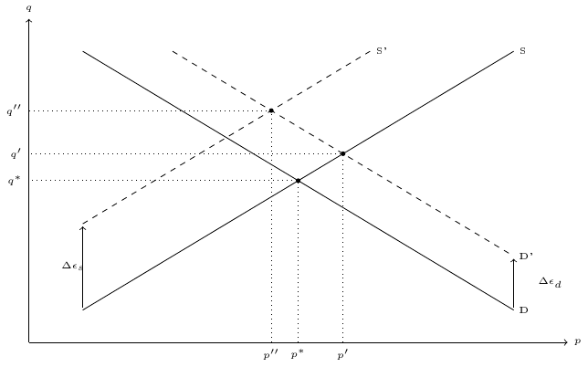
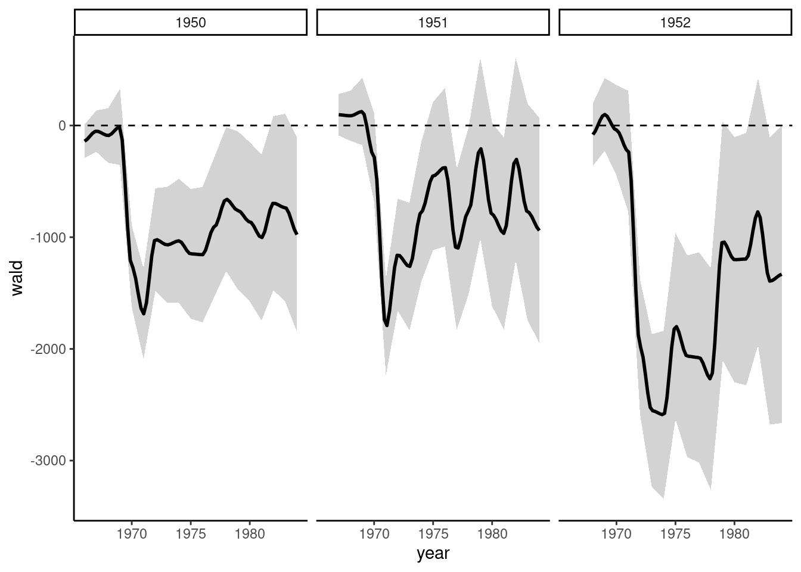
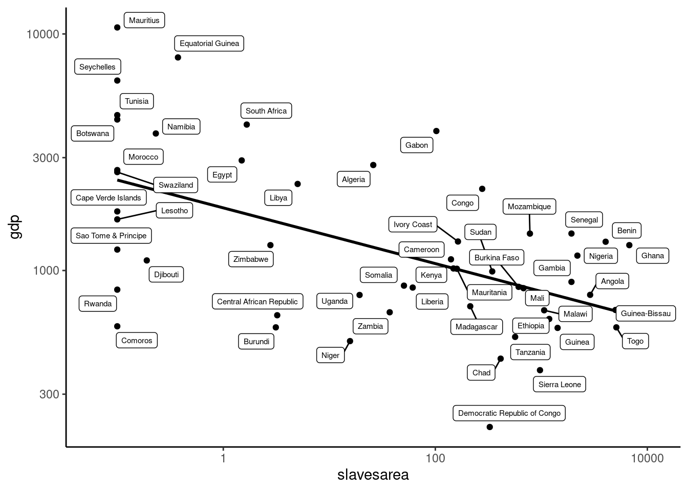

The unbiasedness and the consistency of the OLS estimator rest on the hypothesis that the conditional expectation of the error is constant (and can safely be set to zero if the model contains an intercept). Namely, starting with the simple linear model: \(y_n = \alpha + \beta x_n + \epsilon_n\), \(\mbox{E}(\epsilon \mid x) = 0\), or equivalently \(\mbox{E}(y \mid x) = \alpha + \beta x_n\). The same property can also be described using the covariance between the covariate and the error that can be written, using the rule of repeated expectation:
If the conditional expectation of \(\epsilon\) is a constant \(\mbox{E}_\epsilon(\epsilon\mid x) = \mu_\epsilon\) (not necessarily 0), the covariance is \(\mbox{cov}(x, \epsilon) = \mu_\epsilon \mbox{E}_x(x - \mu_x) = 0\). Stated differently, \(x\) is supposed to be exogenous, or \(x\) is assumed to be uncorrelated with \(\epsilon\). This is a reasonable assumption in an experimental setting, when the values of \(x\) in the sample are set by the researcher. Unfortunately, most of the data used in microeconometrics are not experimental, so the problem of endogeneity is severe.1
Section 7.1 presents the circumstances where some covariates are endogenous. Section 7.2 presents the simple instrumental variable estimator (one endogenous covariate and one instrument), Section 7.3 extends this model to the case where there may be more than one endogenous covariate and several instruments and Section 7.4 to the estimation of systems of equations. Section 7.5 presents the fixed effects model. Finally, several testing procedures are presented in Section 7.6.
7.1 Sources of endogeneity
In economics, the problem of endogenous covariates happens mainly in three circumstances: errors in variables, omitted variables and simultaneity.
Errors in variables
Data used in economics, especially micro-data, are prone to errors of measurement. This problem can affect either the response or some of the covariates. Suppose that the model that we seek to estimate is: \(y^*_n = \alpha + \beta x^*_n + \epsilon^*_n\), where the covariate is exogenous, which implies that \(\mbox{cov}(x^*, \epsilon^*)=0\). Suppose that the response is observed with error, namely that the observed value of the response is \(y_n = y ^*_n + \nu_n\), where \(\nu_n\) is the measurement error of the response. In terms of the observed response, the model is now:
The error of the estimable model is then \(\epsilon_n = \epsilon^*_n + \nu_n\) which is still uncorrelated with \(x\) if \(\nu\) is uncorrelated with \(x\), which means that the error of measurement of the response is uncorrelated with the covariate. In this case, the measurement error only increases the size of the error, which implies that the coefficients are estimated less precisely and that the R2 is lower compared to a model with a correctly measured response.
Now consider that the covariate is measured with error and that the observable values of the covariate is \(x_n = x_n ^ * + \nu_n\). If the measurement error is uncorrelated with the value of the covariate, the variance of the observed covariate is therefore \(\sigma_x ^ 2 = \sigma_x ^ {*2} + \sigma_\nu ^ 2\). Moreover, the covariance between the observed covariate and the measurement error is equal to the variance of the measurement error: \(\sigma_{x\nu} = \mbox{E} \left((x ^ * + \nu - \mu_x) \nu\right) = \sigma_\nu ^ 2\), because the measurement error is uncorrelated with the covariate. Rewriting the model in terms of \(x\), we get: \(y_n = \alpha + \beta x_n + \epsilon_n\), with \(\epsilon_n = \epsilon_n ^ *- \beta \nu_n\). The error of this model is now correlated with \(x\), as \(\mbox{cov}(x, \epsilon_n) = \mbox{cov}(x^* + \nu,\epsilon ^ * - \beta \nu) = - \beta \sigma_\nu ^ 2\). The OLS estimator can be written as usual as:
Taking the expectations, we have \(\mbox{E}\left[(x - \bar{x}) \epsilon\right] = -\beta \sigma_\nu ^ 2\) and the expected value of the estimator is then:
Therefore, the OLS estimator is biased and the term in brackets is the minus the share of the variance of \(x\) that is due to measurement errors.Therefore \(\mid\hat{\beta}\mid < \beta\). This kind of bias is called an attenuation bias (the absolute value of the estimator is lower than the true value), which can be either a lower or an upper bias depending on the sign of \(\beta\). This bias clearly doesn’t attenuate in large samples. As \(N\) grows, the empirical variances/covariances converge to the population ones, and the estimator therefore converges to: \(\mbox{plim} \;\hat{\beta} = \beta \left(1 - \sigma_\nu ^ 2 / \sigma_x ^ 2\right)\). For example, if the measurement error accounts for 20% of the total variance of \(x\), \(\hat{\beta}\) converges to 80% of the true parameter.
Omitted variable bias
Suppose that the true model is: \(y_n = \alpha + \beta_x x_n + \beta_z z_n + \epsilon_n\), where the conditional expectation of \(\epsilon\) with respect to \(x\) and \(z\) is 0. Therefore, this model can be consistently estimated by least squares. Consider now that \(z\) is unobserved. Therefore, the model to be estimated is \(y_n = \alpha + \beta_x x_n + \eta_n\), with \(\eta_n = \beta_z z_n + \epsilon_n\). The omission of a relevant (\(\beta_z \neq 0\)) covariate has two consequences:
the variance of the error is now \(\sigma_\eta ^ 2 = \beta_z ^ 2 \sigma_z^2 + \sigma_\epsilon^2\), and is therefore greater than the one of the initial model for which \(z\) is observed and used as a covariate,
the covariance between the error and \(x\) is \(\mbox{cov}(x, \eta) = \beta_z \mbox{cov}(x, z)\); therefore, if the covariate is correlated with the omitted variable, the covariate and the error of the model are correlated.
As the variance of the OLS estimator is proportional to the variance of the errors, omission of a relevant covariate will always induce a less precise estimation of the slopes and a lower R2. Moreover, if the omitted covariate is correlated with the covariate used in the regression, the estimation will be biased and inconsistent. This omitted variable bias can be computed as follows:
Taking the conditional expectation, the last term disappears, so that:
\[
\mbox{E}(\hat{\beta}_x\mid x, z) = \beta_x + \beta_z
\frac{\hat{\sigma}_{xz}}{\hat{\sigma}_x ^ 2}
\] There is an upper bias if the signs of the covariance between \(x\) and \(z\) and \(\beta_z\) are the same, and a lower bias if they have opposite signs. As \(N\) tends to infinity, the OLS estimator converges to:
where \(\beta_{z/x}\) is the true value of the slope of the regression of \(z\) on \(x\). This formula makes clear what \(\hat{\beta}_x\) really estimates in a linear regression:
the direct effect of \(x\) on \(y\) which is \(\beta_x\),
the indirect effect of \(x\) on \(y\) which is the product of the effect of \(x\) on \(z\) (\(\beta_{z/x}\)) times the effect of \(z\) on \(\eta\) and therefore on \(y\) (\(\beta_z\)).
A classic example of omitted variable bias occurs in the estimation of a Mincer earning function which relates wage (\(w\)), education (\(e\) in years) and experience (\(s\) in weeks):
\[
\ln w = \beta_o + \beta_e e + \beta_s s + \beta_{ss} s ^ 2 + \epsilon
\]
\(\beta_e = \frac{d\ln w}{de} = \frac{d w / w}{de}\) is the percentage increase of the wage for one more year of education. To illustrate the estimation of a Mincer function, we use the data of Koop, Poirier, and Tobias (2005), which is a sample of 303 white males taken from the National Longitudinal Survey of Youth and is available as sibling_educ.
Results indicate that one more year of education increases on average the wage by 10%. One concern about this kind of estimation is that individuals have different abilities (\(a\)), and that more abilities have a positive effect on wage, but may also have a positive effect on education. If this is the case, \(\beta_{a} > 0\), \(\beta_{a/e} > 0\) and therefore \(\mbox{plim} \;\hat{\beta}_e = \beta_e + \beta_{a} \beta_{a/e} > \beta_e\) and the OLS estimator is upward biased. This is the case because more education:
increases, for a given level of ability, the expected wage by \(\beta_e\),
means that, on average, the level of ability is higher, this effect being \(\beta_{a/e}\) (which in this case doesn’t imply a causality of \(e\) on \(a\), but simply a correlation), so the wage will also be higher (\(\beta_a > 0\)).
Numerous studies of the Mincer function deal with this problem of endogeneity of the education level. But in the data set we used, there is a measure of the ability, which is the standardized AFQT test score. If we introduce ability in the regression, education is no more endogenous and least squares will give a consistent estimation of the effect of education on wage.2 We first check that education and ability are positively correlated:
Therefore, adding ability as a covariate in the previous regression should decrease the coefficient on education:
lm(log(wage)~educ+poly(experience, 2)+ability, sibling_educ)%>%gaze(coef ="educ")## Estimate Std. Error t value Pr(>|t|)## educ 0.0887 0.0150 5.92 8.7e-09
The effect of one more year of education is now an increase of 8.7% of the wage (compared to 10% previously).
Simultaneity bias
Often in economics, the phenomenon of interest is not described by a single equation, but by a system of equations. Consider for example a market equilibrium. The two equations relate the quantity demanded / supplied (\(q ^ d\) and \(q ^ o\)) to the unit price and to some specific covariates to the demand and to the supply side of the market. Maddala and Lahiri (2009), pp. 376-377 studied the market for commercial loans using monthly US data for 1979-1984. The data set is available as loan_market. Total commercial loans (loans) are in billions of dollars; the price is the average prime rate charged by banks (prime_rate). aaa_rate is the AAA corporate bond rate, which is the price of an alternative financing to firms. Therefore, it enters only the demand equation, with an expected positive sign. treas_rate is the treasure bill rate. As it is a substitute to commercial loans from a bank, it should enter only the supply equation, with an expected negative sign. For the sake of simplicity, we denote \(q\) and \(p\) as the quantity (in logarithm) and the price for this loan market model and, \(d\) and \(s\) as the two rates that enter only, respectively, the demand and the supply equation:
loan<-loan_market%>%transmute(q =log(loans), p =prime_rate, d =aaa_rate, s =treas_rate)
The equilibrium on the loan market is then defined by a system of three equations:
\[
\left\{
\begin{array}{rcl}
q_d &=& \alpha_d + \beta_d p + \gamma_d d + \epsilon_d \\
q_s &=& \alpha_s + \beta_s p + \gamma_s s + \epsilon_s \\
q_d &=& q_s
\end{array}
\right.
\]
The last equation is non-stochastic and states that the market should be in equilibrium. The demand curve should be decreasing (\(\beta_d < 0\)) and the supply curve increasing (\(\beta_s > 0\)). The equilibrium is depicted in Figure 7.1.

Figure 7.1: Market equilibrium
The OLS estimation of the demand and the supply equations is given below:
ols_d<-lm(q~p+d, data =loan)ols_s<-lm(q~p+s, data =loan)ols_d%>%gaze## Estimate Std. Error t value Pr(>|t|)## p -0.04337 0.00429 -10.1 3.1e-15## d 0.10346 0.00817 12.7 < 2e-16ols_s%>%gaze## Estimate Std. Error t value Pr(>|t|)## p 0.00136 0.01478 0.09 0.93## s -0.01838 0.01911 -0.96 0.34
The two coefficients of the demand equation have the predicted sign and are highly significant: a 1 point of percentage increase of the prime rate decreases loans by 4.3%, and a one point of percentage increase of the corporate bond rate increases loans by 10.3%. The fit of the supply equation is very bad and, even if the two coefficients have the predicted sign, the values are very low and insignificant.
What is actually observed for each observation in the sample is a price-quantity combination at an equilibrium. A positive shock on the demand equation will move upward the demand curve and will lead to a new equilibrium with a higher equilibrium quantity \(q'\) and also a higher equilibrium price \(p'\) (except in the special case where the supply curve is vertical, which means that the price elasticity of supply is infinite). This means that \(p\) is correlated with \(\epsilon_ d\), which leads to a bias in the estimation of \(\beta_d\) by OLS. The same reasoning applies of course to the supply curve.
One solution would be to use the equilibrium condition and then to solve for \(p\), and then for \(q\). This reduced-form system of two equations:
\[
\left\{
\begin{array}{rcccccccccc}
p &=& \displaystyle \frac{\alpha_d - \alpha_s}{\beta_s - \beta_d} &+&
\displaystyle \frac{\gamma_d}{\beta_s - \beta_d} d &-&
\displaystyle \frac{\gamma_s}{\beta_s - \beta_d} s &+&
\displaystyle \frac{\epsilon_d - \epsilon_s}{\beta_s - \beta_d} \\
&=& \pi_o &+& \pi_d d &+& \pi_s s &+& \nu_p \\
q &=& \displaystyle \frac{\alpha_d \beta_s - \beta_d \alpha_s}{\beta_s - \beta_d} &+&
\displaystyle \frac{\beta_s \gamma_d}{\beta_s - \beta_d}d &-&
\displaystyle \frac{\beta_d \gamma_s}{\beta_s - \beta_d} s &+&
\displaystyle \frac{- \beta_d \epsilon_s + \beta_s
\epsilon_d}{\beta_s - \beta_d} \\
&=& \delta_o &+& \delta_d d &+& \delta_s s &+& \nu_q \\
\end{array}
\right.
\] makes clear that both \(p\) and \(q\) depend on \(\epsilon_s\) and \(\epsilon_d\). More precisely, as \(\beta_s - \beta_d > 0\), \(\epsilon_d\) and \(\epsilon_s\) are respectively positively and negatively correlated with the price. \(\Delta \epsilon_d > 0\) will shift the demand curve upward and therefore will increase the equilibrium price. Therefore, the OLS estimator of the slope of the demand curve is biased upward which means, as it is negative, that it is biased downward in absolute value. A positive shock on the supply side (\(\Delta \epsilon_s > 0\)) will move the supply curve upward and therefore will decrease the equilibrium price. The OLS estimator of the slope of the supply curve is then downward biased. The parameters of these two equations can be consistently estimated by least squares, as \(d\) and \(s\) are uncorrelated with the two error terms.
ols_q<-lm(q~d+s, data =loan)ols_p<-lm(p~d+s, data =loan)ols_q%>%gaze## Estimate Std. Error t value Pr(>|t|)## d 0.09437 0.00837 11.3 < 2e-16## s -0.05061 0.00569 -8.9 4.6e-13ols_p%>%gaze## Estimate Std. Error t value Pr(>|t|)## d 0.2876 0.1096 2.62 0.011## s 1.0667 0.0745 14.32 <2e-16
The reduced form coefficients are not meaningful by themselves, but only if they enable to retrieve the structural parameters. This is actually the case here as \(\frac{\delta_s}{\pi_s}=\beta_d\) and \(\frac{\delta_d}{\pi_d}=\beta_s\).
The price coefficients are as expected higher in absolute values than those obtained using OLS on the demand and on the supply equation. It is particularly the case for \(\beta_s\) (0.328 vs. 0.001). On the contrary, the absolute value of \(\beta_d\) increases very slightly (\(-0.047\) vs. \(-0.043\)).
Actually, the case we have considered is special because there is one and only one extra covariate in both equations. Consider as an example the following system of equations:
where there are two extra covariates in the demand equation and no covariates (except the price) in the supply equation. Solving for the two endogenous variables \(p\) and \(q\), we get in this case:
we now have \(\frac{\delta_1}{\pi_1} = \frac{\delta_2}{\pi_2} = \beta_s\); there are two ratios of the reduced parameters that give the value of the slope of the supply curve, but it is very implausible that these two values will be equal. On the contrary, there is no way to retrieve the slope of the demand curve from the reduced form parameters. Therefore, this indirect least squares approach is of limited interest. In the general case, as we have seen, some coefficients like \(\beta_s\) in our example may be over-identified and some other like \(\beta_d\) are under-identified.
7.2 Simple instrumental variable estimator
The general idea of the instrumental variable (IV) estimator is to find variables which are correlated with the endogenous covariates and uncorrelated with the error of the structural equation. This means that the instruments don’t have a direct effect on the response, but only an indirect effect because of their correlation with the endogenous covariates. These instruments allow to get an exogenous source of variation of the covariate, i.e., a source of variation that has nothing to do with the process of interest. We’ll start with the simple case where the number of instruments equals the number of endogenous covariates, i.e., the just-identified case.
Computation of the simple instrumental variable estimator
Consider a simple linear regression: \(y_n = \alpha + \beta x_n + \epsilon_n\), with \(\mbox{E}(\epsilon \mid x) \neq 0\). From Equation 1.9, the first-order conditions for the minimization of the sum of square residuals can be written as:
Equation 7.1 states that the OLS estimator is obtained by imposing the sample equivalent to the moment condition \(\mbox{E}(\epsilon \mid x) = 0\), i.e., that the covariance between the residuals and the covariate is exactly 0 in the sample. This of course leads to a biased and inconsistent estimator if \(\mbox{E}(\epsilon \mid x)\neq 0\). Now suppose that a variable \(w\) exists, which is correlated with the covariate, but not with the error of the model (this latter hypothesis is called the exclusion restriction). Such a variable has no direct effect on the response, but only an indirect effect due to its correlation with the covariate. As by hypothesis, \(\mbox{E}(\epsilon \mid w) = 0\), a consistent estimator can be obtained by imposing the sample equivalent to this moment condition, i.e., by setting the estimator to a value such that the covariance between the residuals and the instrument is 0:
which is the ratio of the empirical covariances of \(w\) with \(y\) and with \(x\). Dividing both sides of the ratio by the empirical variance of \(w\) (\(\hat{\sigma}_w ^ 2\)), Equation 7.3 can also be written as:
where \(\hat{\beta}_{y/w}\) and \(\hat{\beta}_{x/w}\) are the slopes of the regressions of \(y\) and \(x\) on \(w\). Therefore, the IV estimator is also the ratio of the marginal effects of \(w\) on \(y\) and on \(x\).3 Replacing \(y_n - \bar{y}\) by \(\beta(x_n - \bar{x}) + \epsilon_n\) in Equation 7.3, we get:
As \(N\) grows, the two empirical covariances converge to the population covariances and, as by hypothesis, the instrument is uncorrelated with the error (\(\sigma_{w\epsilon} = 0\)) and is correlated with the covariate (\(\sigma_{wx} \neq0\)), the instrumental variable estimator is consistent (\(\mbox{plim} \;\hat{\beta} = \beta + \frac{\sigma_{w\epsilon}}{\sigma_{wx}} = \beta\)). Assuming spherical disturbances, the variance of the IV estimator is:
The last expression, which introduces the coefficient of correlation between \(x\) and \(z\), is particularly appealing as it shows that, compared to the standard error of the OLS estimator, the standard error of the IV estimator is inflated by \(1 / \mid \hat{\rho}_{wx}\mid\). This term is close to 1 if the correlation between \(x\) and \(w\) is high and, in this case, the loss of precision implied by the use of the IV estimator is low. On the contrary, if the correlation between \(x\) and \(w\) is low, the IV estimator will be very imprecisely estimated.
The IV estimator can also be obtained by first regressing \(x\) on \(w\) and then by regressing \(y\) on the fitted values of the previous regression. Consider the linear model that relates the instrument to the covariate: \(x_n = \gamma + \delta w_n + \nu_n\). We estimate this model by OLS and then we express the fitted values (\(\hat{x}\)) as a function of \(\hat{\delta}\): \(\hat{x}_n - \bar{x} = \hat{\delta}(w_n - \bar{w})\). We can therefore rewrite the numerator and the denominator of the IV estimator given by Equation 7.3 as:
which is the OLS estimator of \(y\) on \(\hat{x}\), \(\hat{x}\) being the fitted values of the regression of \(x\) on \(w\). Therefore, the IV estimator can be obtained by running two OLS regressions and is for this reason also called the two-stage least square (2SLS) estimator. As \(x\) is correlated with \(\epsilon\), but \(w\) is not, the idea of the 2SLS estimator is to replace \(x\) by a linear transformation of \(w\) which is as close as possible to \(x\), and this is simply the fitted values of the regression of \(x\) on \(w\).
The extension of the case when there are \(K > 1\) covariates and \(K\) instruments is straightforward. The two sets of variables \(x\) and \(w\) can overlap because, if some of the covariates are exogenous, they should also be used as instruments. Denoting \(w\) as the vector of instruments, the moment conditions are \(\mbox{E}(\epsilon \mid w) = 0\) and the sample equivalent is:
\[
\frac{1}{N} W ^ \top (y - Z \gamma) = 0
\]
where \(Z\) and \(W\) are \(N\times (K+1)\) matrix containing respectively the covariates and the instruments (with a vector of 1). Solving for \(\gamma\), we get the instrumental variable estimator:
\[
\hat{\gamma} = (W^\top X) ^ {-1} W^\top y
\]
Small sample properties of the IV estimator
Although it is consistent, the instrumental variable estimator isn’t unbiased. Actually, it doesn’t even have an expected value in the just-identified case. This result can be easily shown starting with the following system of equations:4
\[
\left\{
\begin{array}{rcl}
y &=& \alpha + \beta x + \sigma_\epsilon \epsilon\\
x &=& \gamma + \delta w + \sigma_\nu \nu\\
\end{array}
\right.
\]
where, for convenience, the two error terms are written as standard normal deviates. Moreover, we can write \(\epsilon = \rho \nu + \iota\), so \(\rho\) is the coefficient of correlation between the two error terms and \(\iota\) is by construction uncorrelated with \(\nu\). The IV estimator is then:
As, by construction, \(\mbox{E}(\iota \mid \nu) = 0\), denoting \(\omega = \sum_n c_n \nu_n\), which is a standard normal deviate and \(a = \delta \sqrt{\sum_n (w_n - \bar{w}) ^ 2} / \sigma_\nu\) we finally get:
\[
\hat{\beta} = \beta + \frac{\sigma_\epsilon
\rho}{\sigma_\nu}\frac{\omega}{\omega + a}
\] Then the expected value of \(\hat{\beta}\) is obtained by integrating out this expression with respect to \(\omega\):
but this integral is divergent as \(\omega / (a + \omega)\) tends to infinity as \(\omega\) approach \(-a\). Therefore, \(\hat{\beta}\) has no expected value. The 2SLS derivation of the IV estimator also gives an intuition of the reason why the IV estimator is not unbiased. It would be if, for the second OLS estimation, \(\mbox{E}(x_n\mid w_n) = \gamma + \delta w_n\) were used as the regressor. But actually, \(\hat{x}_n = \hat{\gamma} + \hat{\delta} w_n\) is used and, as the OLS estimator over-fits, the fitted values of \(x\) will be partly correlated with \(\epsilon\). Of course, when the sample size grows, as the OLS estimator is consistent, \(\hat{x}_n\) converges to \(\gamma + \delta z_n\) and the asymptotic bias vanishes. This can be usefully illustrated by simulation. The iv_data function draws a sample of \(y\), \(x\) and one instrument \(w\):
iv_data<-function(N=5E01, R=1E03, r_xe=0.5, r_xw=0.2, r_we=0,alpha=1, beta=1,sds=c(x =1, e =1, w =1),mns=c(x =0, w =0)){nms<-c("x", "e", "w")names(sds)<-nms ; names(mns)<-c("x", "w")b_wx<-r_xw*sds["x"]/sds["w"]a_wx<-mns["x"]-b_wx*mns["w"]cors<-matrix(c(1, r_xe, r_xw, r_xe, 1, r_we, r_xw, 0, 1), nrow =3)XEW<-matrix(rnorm(N*R*3), nrow =N*R)%*%chol(cors)colnames(XEW)<-nmsXEW%>%as_tibble%>%mutate(x =x*sds["x"]+mns["x"], w =w*sds["w"]+mns["w"], e =e*sds["e"], Exw =a_wx+b_wx*w, y =alpha+beta*x+e)%>%add_column(id =factor(rep(1:R, each =N)), .before =1)}
The arguments of the function are the sample size (N), the number of samples (R), the correlations between \(x\) and \(\epsilon\) (the default is 0.5), between \(x\) and \(w\) (0.2 by default) and between \(w\) and \(\epsilon\). The default value for this last correlation is 0, which is a necessary condition for the IV estimator to be consistent. \(x\), \(\epsilon\) and \(w\) are assumed by default to be standard normal deviates, but the means of \(x\) and \(w\) and the standard deviations of \(x\), \(w\) and \(\epsilon\) can be customized using the mns and sds argument. Finally, the coefficients of the linear relation between \(y\) and \(x\) are alpha and beta and these two values are set by default to 1. First, a matrix of normal standard deviates XEW is constructed. This matrix is post-multiplied by the Cholesky decomposition of the matrix of correlation, which introduces the desired correlation between \(x\), \(\epsilon\) and \(w\), which are then adjusted for non-zero means and non-unity standard deviations if necessary. Finally the vector of response is computed, along with the conditional expectation of \(x\): \(\mbox{E}(x\mid w) = \gamma + \delta w\). The iv_coefs function computes the IV estimator using the 2SLS approach.
iv_coefs<-function(i){xh<-lm.fit(cbind(1, i$w), i$x)$fitted.valuesols<-coef(lm.fit(cbind(1, i$x), i$y))[2]%>%unnameivo<-coef(lm.fit(cbind(1, i$Exw), i$y))[2]%>%unnameiv<-coef(lm.fit(cbind(1, xh), i$y))[2]%>%unnametibble(ols =ols, ivo =ivo, iv =iv)}
It uses lm.fit to regress \(x\) on \(w\).5 We compute xh which is \(\hat{x} = \hat{\gamma} + \hat{\delta} w_n\), the fitted values of the regression of \(x\) on \(w\). iv_coefs computes three estimators:
ols, which is the OLS estimator of \(y\) on \(x\),
iv, which is the 2SLS estimator of \(y\) on \(x\) using \(w\) as instruments,
ivo, which is an estimator that can only be computed in the context of simulations and uses \(\mbox{E}(x_n\mid w_n)\) instead of \(\hat{x}_n\) as the regressor in the second OLS estimation.
We first generate a unique sample of 100 observations and we compute the three estimators.
set.seed(1)d<-iv_data(R =1, N =1E02)iv_coefs(d)## # A tibble: 1 × 3## ols ivo iv## <dbl> <dbl> <dbl>## 1 1.50 0.623 0.752
To empirically analyze the distribution of these three estimators, we then generate several samples by setting the R argument, compute the estimators for every sample and analyze the empirical distribution of the estimators. This can be easily done using tidyr::nests and tidyr::unnests functions, as in Section 1.6.2.
set.seed(1)d<-iv_data(R =1E04, N =50)%>%nest(.by =id)%>%transmute(model =map(data, iv_coefs))%>%unnest(cols =model)d%>%print(n =3)
# A tibble: 10,000 × 3
ols ivo iv
<dbl> <dbl> <dbl>
1 1.56 0.437 0.769
2 1.42 0.605 0.415
3 1.64 0.0185 0.0786
# ℹ 9,997 more rows
We then compute the mean, the median and the standard deviation for the three estimators:
d%>%summarise(across(everything(),list(mean =mean, median =median, sd =sd)))%>%pivot_longer(1:6)%>%separate(name, into =c("model", "stat"))%>%pivot_wider(names_from =stat, values_from =value)
# A tibble: 2 × 7
iv_mean iv_median iv_sd model mean median sd
<dbl> <dbl> <dbl> <chr> <dbl> <dbl> <dbl>
1 -6.39 1.10 747. ols 1.50 1.50 0.126
2 -6.39 1.10 747. ivo 1.00 0.996 1.26
The distribution of the three estimators is presented in Figure 7.2.
The OLS estimator is severely biased, as the central value of its distribution is about 1.5 and it has a small variance. The “pseudo-IV” estimator seems unbiased, as its mean (and median) is very close to one. The standard deviation is about 10 times larger than that of the OLS estimator, so the density curve is extremely flat. The mode of the density curve of the IV estimator is slightly larger than 1. Moreover, it has extremely fat tails (much more than the ones of the pseudo-IV estimator), which explains why the expected value and the variance don’t exist. This feature becomes obvious if we zoom in extreme values of the estimator, for example on the \((-4,-3)\) range (see Figure 7.3).
Figure 7.3: Distribution of the IV estimator (zoom)
An example: Segregation effects on urban poverty and inequality
Ananat (2011) investigates the causal effect of segregation on urban poverty and inequality. Several responses are used, especially the Gini index and the poverty rate for the black populations of 121 American cities. The data set is called tracks_side. The level of segregation is measured by the following dissimilarity index:
\[
\frac{1}{2}\sum_{n=1} ^ N \left| b_n - w_n \right|
\]
where \(b_n\) and \(w_n\) are respectively the share of the black and white population of the whole city that lives in census track \(n\) of the city. This index ranges from 0 (no segregation) to 1 (perfect segregation). In the sample of 121 cities used, the segregation index ranges from 0.33 to 0.87, with a median value of 0.57. We’ll focus on the effect of segregation on the poverty rate of black people:
lm_yx<-lm(povb~segregation, tracks_side)lm_yx%>%gaze## Estimate Std. Error t value Pr(>|t|)## segregation 0.1818 0.0514 3.54 0.00058
The coefficient of segregation is positive and highly significant. It indicates that a 1 point increase of the segregation index raises the poverty rate of black people by about 0.18 point. The correlation between segregation and bad economic outcome for black people is well established but, according to the author, the OLS estimator cannot easily be considered as a measure of the causal relationship of segregation on income, as there are some other variables that both influence segregation and outcome for black people. As an example, the situation of Detroit is described, which is a highly segregated city with poor economic outcomes, but other characteristics of the city (political corruption, legacy of a manufacturing economy) can be the cause of these two phenomena (Ananat 2011, 35). Therefore, the OLS estimator is suspected to be biased and inconsistent because of the omitted variable bias. The instrumental variable estimator can be used in this context, but it requires the use of a good instrumental variable, i.e., a variable which is correlated with the endogenous covariate (segregation), but not directly with the response (the poverty rate). The author suggests that the way cities were subdivided by railroads into a large number of neighborhoods can be used as an instrument. Moreover, the tracks were mostly built during the nineteenth century, prior to the great migration (between 1915 to 1950) of African Americans from the south. More precisely, the index is defined as follow:
\[
1 - \sum_n \left(\frac{a_n}{A}\right) ^ 2
\]
where \(a_n\) is the area of neighborhood \(n\) defined by the rail tracks and \(A\) is the total area of the city. The index is 0 if the city is completely undivided and tends to 1 if the number of neighborhoods tends to infinity. This index ranges from 0.24 to 0.99 in the sample, with a median value of 0.74. The regression of \(x\) (segregation) on \(w\) (raildiv) gives:
lm_xw<-lm(segregation~raildiv, tracks_side)lm_xw%>%gaze## Estimate Std. Error t value Pr(>|t|)## raildiv 0.3995 0.0796 5.02 1.8e-06
In the 2SLS interpretation of the IV estimator, this is the first stage regression. The coefficient of raildiv is, as expected, positive and highly significant. It is important to check that the correlation between the covariate and the instrument is strong enough to get a precise IV estimator. This can be performed by computing their coefficient of correlation, or using the R2 or the \(F\) statistic of the first stage regression:
The IV estimator can be obtained by regressing the response on the fitted values of the first stage regression:
lm_yhx<-lm(povb~fitted(lm_xw), tracks_side)lm_yhx%>%gaze## Estimate Std. Error t value Pr(>|t|)## fitted(lm_xw) 0.231 0.128 1.81 0.072
As expected, the IV estimator is larger than the OLS estimator (0.23 vs. 0.18). It can also be obtained by dividing the OLS coefficients of the regressions of \(y\) on \(w\) and of \(x\) on \(w\). The latter has already been computed, the former is:
A 1 point increase of raildiv is associated with a 0.4 point increase of the discrimination index and with a 0.09 point of the poverty rate. Therefore, the 0.4 point increase of segregation increases povb by 0.09, which means that an increase of 1 point of segregation would increase povb by \(0.09 / 0.4 = 0.23\), which is the value of the IV estimator.
Wald estimator
The Wald estimator is the special case of the instrumental variable estimator where the instrument \(w\) is a binary variable and therefore defines two groups (\(w=0\) and \(w=1\)). In this case, the slope of the regression of \(y\) on \(z\) is \(\hat{\beta}_{y/w} = \bar{y}_1 - \bar{y}_0\), where \(\bar{y}_i\) is the sample mean of \(y\) in group \(i=0,1\) and, similarly, the regression of \(x\) on \(w\) is \(\hat{\beta}_{x/w} = \bar{x}_1 - \bar{x}_0\). The Wald estimator is then:
Angrist (1990) studied whether veterans (in his article the Vietnam war) experience a long-term loss of income, and therefore should legitimately receive a benefit to compensate this loss. An obvious way to detect a loss would be to consider a sample with two groups (veterans and non-veterans) and to compare the mean income in these two groups. However, enrollment in the army is not random, and therefore it is probable that “certain types of men are more likely to serve in the armed forces than others”.7 In this situation, income difference is likely to be a biased estimator of the effect of military enrollment. To overcome this difficulty, Angrist (1990) used the fact that a draft lottery was used during the Vietnam war to select the young men who were enrolled in the army. More precisely, the 365 possible days of birth were randomly drawn and ordered and, later on, the army announced the number of days of birth that would lead to an enrollment (depending on the year, this number was between 95 and 195). All the lottery-eligible men didn’t go to the war and some that were not eligible fought, but the lottery produces an exogenous variation of the probability to be enrolled. Two data sources are used and contained in the vietnam data set. The first one is a 1% sample of all the social security numbers and indicates the yearly income. A subset of the vietnam data set (defined by variable == income) contains the average and the standard deviation of income (the FICA definition) for every combination of birth year (birth, from 1950 to 1953), draft eligibility (eligible a factor with levels yes or no), race (white or nonwhite) and year (from 1966 to 1984 for men born in 1950 and starting in 1967, 1968 and 1969 for men born respectively in 1951, 1952 and 1953).
# A tibble: 234 × 8
variable birth eligible race year mean sd cpi
<chr> <dbl> <fct> <chr> <dbl> <dbl> <dbl> <dbl>
1 income 1950 no white 1966 479. 8.35 97.2
2 income 1950 no white 1967 825. 10.8 100
# ℹ 232 more rows
We divide the mean income and its standard deviation by the consumer price index (cpi), we then create two columns for eligible and non-eligible men and we compute the mean difference (dmean) and its standard deviation (sd_dmean):
# A tibble: 108 × 5
birth race year dmean sd_dmean
<dbl> <chr> <dbl> <dbl> <dbl>
1 1950 white 1966 -22.4 12.1
2 1950 white 1967 -8.02 15.1
# ℹ 106 more rows
The results match table 1 of Angrist (1990) page 318 (except that, in the table, the income is not divided by the cpi). The mean income difference is the numerator of the Wald estimator. The denominator is the difference of enrollment probability between draft eligible and ineligible young men. The author estimates this difference using the data of the 1984 Survey of Income and Program Participation (SIPP), which are available in the subset of the vietnam data set obtained with variable == "veteran" and contains the share of veterans and the standard deviation of this share for eligible and non-eligible young men by year of birth and race (birth and race):
# A tibble: 18 × 5
birth eligible race mean sd
<dbl> <fct> <chr> <dbl> <dbl>
1 1950 no white 0.193 0.0169
2 1950 yes white 0.353 0.0223
3 1950 total white 0.267 0.0140
# ℹ 15 more rows
We then create one column for eligible and non-eligible young men, and we compute the difference of shares of enrollment and its standard deviation:
# A tibble: 6 × 4
birth race dshare sd_dshare
<dbl> <chr> <dbl> <dbl>
1 1950 white 0.159 0.0280
2 1951 white 0.136 0.0277
# ℹ 4 more rows
Finally, we join the two tables by race and year of birth; we compute the Wald estimator of the income difference, its standard deviation (using Equation 7.7) and the Student statistic, which is their ratio:
wald<-dinc_elig%>%left_join(dshare_elig, by =c("birth", "race"))%>%mutate(wald =dmean/dshare, sd =sd_dmean/dshare, z =wald/sd)%>%select(birth, race, year, wald, sd, z)wald%>%print(n =2)
# A tibble: 108 × 6
birth race year wald sd z
<dbl> <chr> <dbl> <dbl> <dbl> <dbl>
1 1950 white 1966 -141. 76.0 -1.85
2 1950 white 1967 -50.3 94.5 -0.532
# ℹ 106 more rows
The income differentials are depicted in Figure 7.4; note the use of geom_ribbon to draw a confidence interval for the mean income difference.
wald%>%filter(race=="white")%>%ggplot(aes(year, wald))+geom_ribbon(aes(ymin =wald-1.96*sd, ymax =wald+1.96*sd), fill ="lightgrey")+geom_hline(yintercept =0, linetype ="dashed")+geom_smooth(se =FALSE, span =0.2, color ="black")+facet_grid(~birth)

Figure 7.4: Income differentials between veterans and non-veterans
The income differential between veterans and non-veterans is substantial and persistent (about $1000 of 1984) and is most of the time significant at the 5% level (except for men born in 1951).
7.3 General IV estimator
Consider now the general case. Among the covariates, some of them are endogenous and other are not and should be included in the instrument list. Moreover, there may be more instruments than endogenous covariates.
Computation of the estimator
There are \(K\) covariates, \(J\) endogenous covariates, \(K-J\) exogenous covariates and \(G\) external instruments. We denote \(Z\) and \(W\) the matrix of covariates and instruments. The number of columns of these two matrices are respectively \(K + 1\) and \(G + K - J + 1\). For the model to be identified, we must have \(G + K - J + 1 \geq K + 1\) or \(G \geq J\). Therefore, there must be at least as many external instruments as there are endogenous covariates. We’ll now denote \(L + 1= G + K - J + 1\) the number of columns of \(W\). The \(L+1\) moment conditions are \(\mbox{E}(\epsilon | w) = 0\) which implies \(\mbox{E}(\epsilon w) = 0\). The sample equivalent is the vector of \(L + 1\) empirical moments: \(m = \frac{1}{N}W^\top \hat{\epsilon}\). As \(\hat{\epsilon} = y - Z \hat{\gamma}\), this is a system of \(L + 1\) equation with \(K + 1\) unknown parameter. The system is over-identified if \(L > K\) and in this case it is not possible to find a vector of estimates \(\hat{\beta}\) for which all the empirical moments are 0. The instrumental variable estimator is, in this setting, the vector of parameters that makes the vector of empirical moments as close as possible to a vector of 0. If the errors are spherical, the variance of the vector of empirical moments is:
and the IV estimator minimizes the quadratic form of the vector of moments with the inverse of its covariance matrix:
\[
\frac{N ^ 2}{\sigma_\epsilon^2}m^\top (W ^\top W) ^ {-1} m
=\frac{1}{\sigma_\epsilon ^ 2} \epsilon^\top W (W ^\top W) ^{-1} W ^
\top \epsilon
=\frac{1}{\sigma_\epsilon ^ 2} \epsilon^\top P_W \epsilon
\]
where \(P_W\) is the projection matrix of \(W\), i.e., \(P_Wz\) is the vector of fitted values of \(z\) obtained by regressing \(z\) on \(W\). Therefore, the IV estimator minimizes:
The 2SLS interpretation of the IV estimator is clear, as it is the OLS estimator of a model with \(y\) or (\(P_W y\)) as the response and \(P_W Z\) the covariate. Therefore, it can be obtained in a first step by regressing all the covariates on the instruments and in a second steps by regressing the response on the fitted values of all the covariates obtained in the first step. Replacing \(y\) by \(Z\gamma + \epsilon\) in Equation 7.9, we get:
and the IV estimator is consistent if \(\mbox{plim} \frac{1}{N} Z^\top P_W\epsilon = 0\), or \(\mbox{plim} \frac{1}N W ^ \top \epsilon = 0\). With spherical disturbances, the variance of the IV estimator is:
If the errors are heteroskedastic (or correlated), Equation 7.8 is a biased estimator of the variance of the moments, as \(\mbox{E}(\epsilon\epsilon^\top) \neq \sigma_\epsilon ^ 2 I\). In case of heteroskedasticity, \(\mbox{E}(W^\top\epsilon\epsilon^\top W)\) can be consistently estimated by \(\hat{S} = \sum_n \hat{\epsilon}_n ^ 2 w_n w_n^\top\) where \(\hat{\epsilon}\) are the residuals of a consistent estimation, for example the residuals of the IV estimator previously described. Then, the objective function is:
Minimizing this quadratic form leads to the general method of moments (GMM) estimator, also called the two-stage IV estimator.8
\[
\hat{\gamma} = \left(Z^\top W \hat{S}^{-1} W ^ \top Z\right)^{-1}Z^\top W \hat{S}^{-1} W ^ \top y
\tag{7.10}\]
Replacing \(y\) in Equation 7.10 by \(Z\gamma + \epsilon\), we get:
\[
\hat{\gamma} = \gamma + \left(Z^\top W \hat{S}^{-1} W ^ \top Z\right)^{-1}Z^\top W \hat{S}^{-1} W ^ \top \epsilon
\]
which leads to the following covariance matrix:
\[
\hat{\mbox{V}}(\hat{\gamma}) = \left(Z^\top W \hat{S}^{-1} W ^ \top Z\right)^{-1}
\]
To estimate this covariance matrix, one can use an estimation of \(S\) based on the residuals of the regression of the second step.
An example: long-term effects of slave trade
Africa experienced poor economic performances during the second half of the twentieth century, which can be explained by its experience of slave trade and colonialism. In particular, slave trade may induce long-term negative effects on the economic development of African countries because of induced corruption, ethnic fragmentation and weakening of established states. Africa experienced, between 1400 and 1900 four slave trades: the trans-Atlantic slave trade (the most important), but also the trans-Saharan, the Red Sea and the Indian Ocean slave trades. Not including those who died during the slave trade process, about 18 millions slaves were exported from Africa. Nunn (2008) conducted a quantitative analysis of the effects of slave trade on economic performances, by regressing the 2000 GDP per capita of 52 African countries on a measure of the level of slave extraction. The slave_trade data set is provided by the necountries package:
The response is gdp and the main covariate is a measure of the level of slave extraction, which is the number of slaves normalized by the area of the country. In Figure 7.5, we first use a scatterplot, using log scales for both variables, which clearly indicates a negative relationship between slaves extraction and per capita GDP in 2000. Note the use of ggrepel::geom_label_repel: ggplot2 provides two geoms to draw labels (geom_text and geom_label), but the labels may overlap. geom_label_repel computes a position for the labels that prevent this overlapping.
sltd%>%ggplot(aes(slavesarea, gdp))+geom_point()+scale_x_continuous(trans ="log10", expand =expansion(mult =c(.1)))+scale_y_log10()+geom_smooth(method ="lm", se =FALSE, color ="black")+ggrepel::geom_label_repel(aes(label =country), size =2, max.overlaps =Inf)

Figure 7.5: Per capita GDP and slave extraction
Nunn (2008) in table 2 presents a series of linear regressions, with different sets of controls. We just consider Nunn’s first specification, which includes only dummies for the colonizer as supplementary covariates. colony is a factor with eight levels: we use forcats::fct_lump_min to merge the most infrequent levels: "none" (2 countries), "spain", "germany" and "italy" (1 country).
sltd<-sltd%>%mutate(colony =fct_lump_min(colony, 3))slaves_ols<-lm(log(gdp)~log(slavesarea)+colony, sltd)slaves_ols%>%gaze(coef ="log(slavesarea)")## Estimate Std. Error t value Pr(>|t|)## log(slavesarea) -0.1231 0.0234 -5.26 3.7e-06
The coefficient is negative and highly significant; it implies that a 10% increase of slave extraction induces a reduction of 1% of GDP per capita. As noticed by Nunn (2008), the estimation of the effect of slave trade on GDP can be inconsistent for two reasons:
the level of slave extraction, which is based on information of the ethnicity of individual slaves and then aggregated at the current countries’ level can be prone to error of measurement; moreover, for countries inside the continent (compared to coastal countries), a lot of slaves died during the journey to the coastal port of export, so the level of extraction may be underestimated for these countries,
the average economic conditions may be different for countries that suffered a large extraction, compared to the others; in particular, if countries where the trade was particularly important were poor, their current poor economic conditions can be explained by their poor economic conditions 600 years ago and not by slave trades.
Measurement error induces an attenuation bias, which means that without measurement error, the negative effect of slave trades on GDP per capita would be stronger. The second effect would induce an upward-bias (in absolute value) of the coefficient on slave trades. But, actually, Nunn (2008) showed that areas of Africa that suffered the most slave trade were in general not the poorest areas, but the most developed ones. In this case, the OLS estimator would underestimate the effect of slave trades on GDP per capita. Nunn (2008) then performs instrumental variable regressions, using as instruments the distance between the centroid of the countries and the closest major market for the four slave trades (for example Mauritius and Oman for the Indian Ocean slave trade and Massawa, Suakin and Djibouti for the Red Sea slave trade). The IV regression can be performed by first regressing the endogenous covariate on the external instruments (atlantic, indian, redsea and sahara) and on the exogenous covariates (here colony, the factor indicating the previous colonizer). This is the so-called first-stage regression:
Except for the redsea variable, the coefficients are highly significant, and the four instruments and the exogenous covariate explain more than one-fourth of the variance of slave extraction. The second stage is obtained by regressing the response on the fitted values of the first-step estimation:
sltd<-sltd%>%add_column(hlslarea =fitted(slaves_first))slaves_second<-lm(log(gdp)~hlslarea, sltd)slaves_second%>%gaze## Estimate Std. Error t value Pr(>|t|)## hlslarea -0.1736 0.0459 -3.78 0.00041
The coefficient has almost doubled, compared to the OLS estimator, which confirms that this latter estimator is biased, with an attenuation bias due to measurement error and a downward-bias caused by the fact that the most developed African regions were more affected by slave trade. The two-stage IV estimator is then computed. We use the Formula package which enables to write complex formulas with multiple set of variables, separated by the | operator:9
The first part contains the covariates and the second part the instruments. We then compute the model frame and we extract the covariates, the instruments and the response:
The results are very similar to those of the one-step IV estimator. The IV estimator can also be computed using the ivreg::ivreg function. The main argument is a two-part formula, the first part containing the covariates and the second part the instruments:
ivreg::ivreg(log(gdp)~log(slavesarea)+colony|colony+redsea+atlantic+sahara+indian, data =sltd)
The output of the ivreg function will be presented in Section 7.6.6.
7.4 Three-stage least squares
Consider now the case where the model is defined by a system of equations, some of the covariates entering these equations being endogenous. We consider therefore a system of \(L\) equations denoted by \(y_l=Z_l\gamma_l+\epsilon_l\), with \(l=1\ldots L\). This situation has already encountered in Section 3.7.1, Section 6.2.3 and Section 6.4.4. In this latter section, we considered that all the covariates were exogenous and we presented the seemingly unrelated regression estimator, which is a GLS estimator that takes into account the correlation between the errors of the different equations. Remember that, in matrix form, the system can be written as follows:
And the covariance of the error vector for the whole system is assumed to be:
\[
\Omega=
\left(
\begin{array}{cccc}
\sigma_{11} I & \sigma_{12} I & \ldots &\sigma_{1L} I \\
\sigma_{12} I & \sigma_{22} I & \ldots &\sigma_{2L} I \\
\vdots & \vdots & \ddots & \vdots \\
\sigma_{1L} I & \sigma_{2L} I & \ldots & \sigma_{LL} I
\end{array}
\right)
= \Sigma \otimes I
\]
where \(\otimes\) is the Kronecker product and \(\Sigma\) is a symmetric matrix of dimensions \(L\) for which the diagonal elements are the variance of the errors for a given equation and the off-diagonal elements the covariances between the pairs of errors of two different equations.
Computation of the three-stage least square estimator
If some covariates are endogenous, we should consider, for each equation, a matrix of instruments:
\[
\mbox{V}(m) = \frac{1}{N ^ 2}\mbox{E}\left(m m ^ \top\right) =
\frac{1}{N ^ 2}W ^ \top \mbox{E}\left(\epsilon \epsilon ^ \top\right) W =
\frac{1}{N ^ 2}W ^ \top \Omega W = \frac{1}{N ^ 2}W ^ \top (\Sigma \otimes I) W
\]
The three-stage least squares (3SLS) estimator10 minimizes the quadratic form of the moments with the inverse of this variance matrix:
\[
m ^ \top (W ^ \top \Omega W) ^ {-1} m = (y - Z \gamma) ^ \top (W ^ \top
\Omega W) ^ {-1} (y - Z \gamma)
\]
which leads to the following estimator:
\[
\hat{\gamma} = \left(Z ^ \top W (W ^ \top \Omega W) ^ {-1} W ^ \top
Z\right) ^ {-1}
\left(Z ^ \top W (W ^ \top \Omega W) ^ {-1} W ^ \top y\right)
\tag{7.11}\]
This estimator can actually be computed using least squares on transformed data. Denote \(\Psi = \Sigma ^ {- 0.5} \otimes I\) the matrix such that \(\Psi ^ \top \Psi = \Sigma ^ {-1} \otimes I = \Omega ^ {-1}\). Then, premultiply the covariates and the response by \(\Psi\) and the instruments by \((\Psi^{-1}) ^ \top\). Then the projection matrix of \(\tilde{W} = {\Psi^{-1}} ^ \top W\) is:
\[
P_{\tilde{W}} = (\Psi^{-1}) ^ \top W \left(W ^ \top \Omega W\right) ^ {-1} W ^ \top \Psi^{-1}
\]
The transformed covariates and response are \(\tilde{Z} = \Psi Z\) and \(\tilde{y} = \Psi y\), so that performing the instrumental variable estimator on the transformed data, we get:
\[
\begin{array}{rcl}
\hat{\gamma} &=& \left(\tilde{Z}^\top P_{\tilde{W}} \tilde{Z}\right) ^
{-1} \left(\tilde{Z}^\top P_{\tilde{W}} \tilde{y}\right) \\
&=& \left(Z ^ \top \Psi ^ \top (\Psi^{-1}) ^ \top W \left(W ^ \top \Omega
W\right) ^ {-1} W ^ \top \Psi^{-1} \Psi Z\right) ^ {-1} \\
&\times & \left(Z ^ \top \Psi ^ \top (\Psi^{-1}) ^ \top W \left(W ^ \top \Omega
W\right) ^ {-1} W ^ \top \Psi^{-1} \Psi y\right) \\
&=& \left(Z ^ \top W (W ^ \top \Omega W) ^ {-1} W ^ \top Z\right)^ {-1}
\left(Z ^ \top W (W ^ \top \Omega W) ^ {-1} W ^ \top y\right)
\end{array}
\]
which is Equation 7.11. Therefore, the 3SLS estimator can be computed in the following way:
First compute the 2SLS estimator and retrieve the vectors of residuals (\(\hat{\Xi} = (\hat{\epsilon}_1, \ldots, \hat{\epsilon}_L)\)).
Estimate \(\Sigma\) using the cross-products of the vectors of residuals: \(\hat{\Sigma} = \hat{\Xi} ^ \top \hat{\Xi} / N\),
Use the Cholesky decomposition of \(\hat{\Sigma} ^ {-1}\) to get \(V\) such that \(V ^ \top V = \Sigma ^ {-1}\),
Premultiply the covariates and the response by \(\hat{\Psi} = V \otimes I\) and the instruments by \(\left(\hat{\Psi} ^ {-1}\right) ^ {\top} = (V ^ {-1}) ^ \top \otimes I\),
Regress the transformed covariates on the transformed instruments and retrieve the fitted values,
Regress the transformed response on the fitted values of the previous regression.
An example: the watermelon market
Suits (1955) built an econometric model of the watermelon market using a time series for the United States, and his study was complemented by Wold (1958) who rebuilt the data set. This data set (called watermelon) is a good example of the use of system estimation with endogeneity, and its use for teaching purposes is advocated by Stewart (2019):
# A tibble: 22 × 12
year q h y n p pc pv w pf d1
<dbl> <dbl> <dbl> <dbl> <dbl> <dbl> <dbl> <dbl> <dbl> <dbl> <dbl>
1 1930 1.93 1.90 4.87 2.09 2.07 0.976 0.367 1.46 1.10 0
2 1931 1.89 1.88 4.80 2.09 2.00 0.753 1.18 1.36 1.11 0
# ℹ 20 more rows
# ℹ 1 more variable: d2 <dbl>
On the supply side, two quantities of watermelons are distinguished: q are crop of watermelons available for harvest (millions) and h are watermelons actually harvested (millions). q depends on planting decisions made on information of the previous season; more specifically, q depends on lag values of the average farm price of watermelon p (in dollars per thousand), the average annual net farm price per pound of cottons pc (in dollars), the average farm price of vegetables pv (an index) and on two dummy variables for government cotton acreage allotment program d1 (one for the 1934-1951 period) and for World War 2 d2 (one for 1943-1946 period).
The amount of watermelons actually harvested h depends on current price farm of watermelons p, wages w (the major cost of harvesting) and is of course bounded by q, the amount of watermelon available for harvest. More specifically, the relative price of watermelon and wage is considered. On the demand side, farm price depends on per capita harvest, per capita income (yn) and transportation cost (pf). An inverse demand function is estimated, of the form:
\[
p = \alpha + \beta_q q + \beta_r r + \ldots
\]
and, all the variables being in logarithm, the price and income elasticities are therefore respectively \(1 / \beta_q\) and \(- \beta_r / \beta_q\). We compute the relative price of watermelons in terms of wage (pw), the income per capita (yn) and harvest (hn) and the first lags for p, pc and pv. We also remove the first and the last observation (because of the lag for the first one and because of the missing value for pv and w for the last one).
The exogenous variables are w, n, yn, pf, d1, d2 and the lagged values of the price of watermelons (lp), cotton (lpc) and vegetables (lpv). We form a one-sided formula for this set of instruments:
eq_inst<-~w+n+yn+lp+pf+d1+d2+lpc+lpv
We then extract the three matrices of covariates, the matrix of instruments and the matrix of responses:
From this consistent, but inefficient estimator, we extract the data frame of residuals (one column per equation, one line per observation), we coerce it to a matrix and we estimate the matrix of covariance for the system of equation (\(\Sigma\)):
We then apply the transformation for the instruments, using \(\left(V ^ {-1}\right) ^ \top\). The matrix of instruments being the same for all the equations, the transformation can be obtained more simply using a Kronecker product:
The relative price of watermelon is significantly positive in the supply equation, with a value of 0.12 which is the price elasticity of supply. In the inverse demand function, the coefficients of per capita quantity of watermelons and of per capita income have the expected sign (respectively negative and positive) and are highly significant. The estimated price and income elasticities are \(1 / -0.89 = -1.12\) and \(- 1.56 / -0.89 = 1.75\).
7.5 Fixed effects model
In Section 6.1.2, we developed the error component model for panel or pseudo-panel data sets. Remember that when we have several observations (\(t\)) for the same entities (\(n\)), the simple linear model can be written as:
\[
y_{nt} = \alpha + \beta x_{nt} + \epsilon_{nt} = \alpha + \beta x_{nt} + \eta_n + \nu_{nt}
\] the error term being the sum of two components: an entity / individual effect \(\eta_n\) and an idiosyncratic effect \(\nu_{nt}\). In Section 6.1.2, we assumed that \(x\) was uncorrelated with \(\epsilon_{nt}\). OLS was still a consistent estimator, but the BLUE estimator was GLS which takes into account the correlation between errors of the observations of the same entity / individual caused by the presence of a common individual effect \(\eta_n\). Consider now that \(x\) is endogenous; the OLS and GLS estimators are then biased and inconsistent. If \(x\) is correlated with \(\eta\): \(\mbox{E}(\eta \mid x) \neq 0\) but not with \(\nu\): \(\mbox{E}(\nu \mid x) = 0\), unbiased and consistent OLS estimators can be obtained when the individual effect \(\eta\) is either estimated or if the estimation is performed on a transformation of the covariate and the response that removes the individual effect. This is called the fixed effects estimator.
Computation of the fixed effects estimator
The linear model: \(y_{nt} = \beta^\top x_{nt} + \eta_n + \nu_{nt}\) can be written in matrix form as:
\[
y = X \beta + D \eta + \nu
\] Note that this model doesn’t contain an intercept: as \(\eta\) are considered as parameters to be estimated, with an intercept \(\alpha\), only \(N\) parameters like \(\alpha + \eta_n\) can be estimated and therefore, \(\alpha\) can safely be set to 0. \(D = j_T \otimes I_N\) is a \(NT\times N\) matrix where each column contains a dummy variable for one individual. The least squares dummy variable (LSDV) estimator consists of estimating by least squares \(\beta\) and \(\eta\). Instead of estimating the \(N\)\(\eta\) parameters, it is simpler and more efficient to use the Frisch-Waugh theorem: first \(X\) and \(y\) are regressed on \(D\), then the residuals of the first regression of \(y\) are regressed on those of \(X\).
The OLS estimate of a variable \(z\) on \(D\) is: \(\hat{\delta} = (D ^ \top D) ^ {-1} D^\top z\). But \(D^\top D = T I\), so that \((D ^ \top D) ^ {-1} = I / T\). Moreover:
\[
D^\top z = \left(
\begin{array}{c}
\sum_t z_{1t} \\
\sum_t z_{2t} \\
\vdots \\
\sum_t z_{Nt} \\
\end{array}
\right)
\] and therefore \(\hat{\delta}\) is a vector of individual mean of \(z\), with typical element \(\hat{\delta}_n = \bar{z}_{n.} = \sum_t z_{nt} / T\). Therefore, applying the Frisch-Waugh theorem implies that regressing \(y\) on \(X\) and \(D\) is equivalent to regressing \(y\) on \(X\) with both the response and the covariates measured in deviations from their individual means. For one observation, we have: \(y_{nt} = \beta^\top x_{nt} + \eta_n + \nu_{nt}\). Taking the individual mean of this equation, we get: \(\bar{y}_{n.} = \beta^\top \bar{x}_{n.} + \eta_n + \bar{\nu}_{n.}\). Taking deviations from the individual means, the model to estimate is then:
Therefore, if \(x\) is correlated with \(\eta\), but not with \(\nu\), the OLS estimator of this model is consistent because the error doesn’t contain \(\eta\) anymore and is therefore uncorrelated with \(x\). This model is called the fixed effects estimator and also the within estimator in the panel data literature. With a single regressor, the estimator of the unique slope is: \[
\hat{\beta} = \frac{\sum_{n=1} ^ N \sum_{t = 1} ^ T (y_{nt} - \bar{y}_{n.})(x_{nt} - \bar{x}_{n.})}
{\sum_{n=1} ^ N \sum_{t = 1} ^ T (x_{nt} - \bar{x}_{n.}) ^ 2}
\tag{7.12}\]
The deviation from individual means is obviously not the only transformation that enables to get rid of the entity effects. Consider the special case where \(T = 2\) for all individuals. An interesting example of this particular case is samples of twins. In this case:
\[
\left\{
\begin{array}{rcl}
y_{n1} = \beta x_{n1} + \eta_n + \nu_{n1} \\
y_{n2} = \beta x_{n2} + \eta_n + \nu_{n2} \\
\end{array}
\right.
\] And the difference between the two equations enables to get rid of the entity effect:
The least squares estimator of the slope is the following first-difference estimator:
\[
\hat{\beta} = \frac{\sum_n(y_{n1} - y_{n2})(x_{n1} - x_{n2})}{\sum_n(x_{n1} - x_{n2})}
\] which is in this case identical to the within estimator. This result can be established by remarking that the numerator of Equation 7.12 is a sum of \(N\) terms of the form:
\[
(y_{n1} - \bar{y}_{n.})(x_{n1} - \bar{x}_{n.})+(y_{n2} - \bar{y}_{n.})(x_{n2} - \bar{x}_{n.})
\] But \(z_{n1} - \bar{z}_{n.} = z_{n1} - \frac{1}{2}(z_{n1} + z_{n2}) = \frac{1}{2}(z_{n1} - z_{n2})\). Similarly, \(z_{n2} - \bar{z}_{n.} = -\frac{1}{2}(z_{n1} - z_{n2})\). Therefore, each term of the numerator of Equation 7.12 reduces to \(\frac{1}{2} (y_{n1} - y_{n2})(x_{n1} - x_{n2})\) and similarly, each term of the denominator reduces to \(\frac{1}{2}(x_{n1} - x_{n2}) ^ 2\) which proves the equivalence between the first-difference and the within estimators. When \(T > 2\) the within and the first-difference estimators differ:
the within estimator is more efficient, as it uses all the observations; on the contrary, while performing the first difference, the first observation for every individual is lost,
the error of the within estimator is \(\nu_{nt} - \bar{\nu}_{n.}\) and therefore contains the whole series of \(\nu_n\); on the contrary, the error of the first difference is \(\nu_{nt} - \nu_{n(t-1)}\) and therefore contains the values of \(\nu_n\) only for the current and the previous period.
Application: Mincer earning function using a sample of twins
In Section 6.4.3, we’ve estimated a Mincer earning function using the twins data set.
Estimate Std. Error t value Pr(>|t|)
educ 0.0768 0.0106 7.25 2e-12
age 0.0778 0.0214 3.64 0.00031
age2 -0.0968 0.0266 -3.64 0.00031
The estimated return of education is about 7.7%, but it may be biased if the error is correlated with education. In particular, “abilities” are unobserved and may be correlated with education. If this correlation is positive, then the OLS estimator is upward-biased. The solution here is to consider that abilities should be similar for the pair of twins, as they are genetically identical and had the same familial environment. In this case, the fixed effects model can be performed. It can be obtained either by: estimating coefficients for all family dummies, using OLS on the within transformed variables or using OLS on the differences. Note that identical twins have obviously the same age, so this covariate disappears in the fixed effects model. Let’s start with the LSDV estimator:
The estimated return of education is much lower (3.9%) than the OLS estimator. Note that numerous parameters are estimated (215), and the computation can be unfeasible if the number of entities is very large. Whatever the size of the sample, it is simpler and more efficient to use OLS on the transformed data, either using the within or the first-difference estimator. This can easily be done using:
In both cases, we grouped the rows by family, i.e., there are 214 groups of two lines, one for each pair of twins. In the first case, we use mutate to remove the individual mean; for example, mean(educ) is the mean of education computed for every family and is repeated two times, and we therefore have 428 observations (one for each individual). In the second case, we use summarise and we therefore get 214 observations (one for each family), the response and the covariate being the twin difference of earning and education.
Application: Testing Tobin’s Q theory of investment using panel data
Schaller (1990) tested the relevance of Tobin’s Q theory of investment by regressing the investment rate (the ratio of the investment and the stock of capital) to Tobin’s Q, which is the ratio of the value of the firm and the stock of capital. This data set has already been presented in Section 6.4.3, where we’ve estimated by GLS an investment equation using the Tobin’s Q theory of investment. We consider now the estimation of a fixed effects model. It is obtained using plm (of the plm package) by setting the model argument to "within" (which is actually the default value).
Oneway (individual) effect Within Model
Call:
plm(formula = ikn ~ qn, data = tobinq)
Balanced Panel: n = 188, T = 35, N = 6580
Residuals:
Min. 1st Qu. Median 3rd Qu. Max.
-0.21631 -0.04525 -0.00849 0.03365 0.61844
Coefficients:
Estimate Std. Error t-value Pr(>|t|)
qn 0.003792 0.000173 22 <2e-16 ***
---
Signif. codes: 0 '***' 0.001 '**' 0.01 '*' 0.05 '.' 0.1 ' ' 1
Total Sum of Squares: 36.7
Residual Sum of Squares: 34.1
R-Squared: 0.0702
Adj. R-Squared: 0.0428
F-statistic: 482.412 on 1 and 6391 DF, p-value: <2e-16
The individual effects are not estimated because the estimator uses the within transformation and then performs OLS on transformed data. However, the individual effects can be computed easily because: \(\hat{\eta}_n = \bar{y}_{n.} - \hat{\beta} ^ \top \bar{x}_{n.}\). The fixef method for plm objects retrieves the fixed effects and a type argument can be set to:
"level": the effects are then the same as those obtained by LSDV without intercept,
"dfirst": only \(N - 1\) effects are estimated, the first one being set to 0; these are the effects obtained by LSDV with an intercept,
"dmean": \(N\) effects and an overall intercept are estimated, but the \(N\) effects have a 0 mean.
Models estimated in this chapter, either using the IV or the fixed effects estimator, treat the endogeneity of some covariates, either by using instruments or by removing individual effects. These estimates are consistent if some covariates are actually endogenous, although other estimators like OLS or GLS are not. However, if endogeneity is actually not a problem, these later estimators are also consistent and are moreover more efficient. The Hausman test is based on the comparison of these two estimators and on the null hypothesis of the absence of endogeneity:
\(\hat{\beta}_0\), with variance \(\hat{V}_0\) is only consistent if the hypothesis is true and is in this case efficient,
\(\hat{\beta}_1\), with variance \(\hat{V}_1\) is always consistent, but is less efficient than \(\hat{\beta}_0\) if the hypothesis is true.
Hausman’s test (Hausman 1978) test is based on \(\hat{q} = \hat{\beta}_1 - \hat{\beta}_0\), for which the variance is: \[
\mbox{V}(\hat{q}) =
\mbox{V}(\hat{\beta}_1) + \mbox{V}(\hat{\beta}_0) - 2
\mbox{cov}(\hat{\beta}_1, \hat{\beta}_0)
\tag{7.13}\]
Hausman showed that the covariance between \(\hat{q}\) and \(\hat{\beta}_0\) is 0. Therefore:
and therefore Equation 7.13 simplifies to: \(\mbox{V}(\hat{q}) = \mbox{V}(\hat{\beta}_1) - \mbox{V}(\hat{\beta}_0)\). The asymptotic distribution of the difference of the two vectors of estimates is, under H0:
and therefore \((\hat{\beta}_1 - \hat{\beta}_0) ^ \top \left(\mbox{V}(\hat{\beta}_1) - \mbox{V}(\hat{\beta}_0)\right) ^ {-1} (\hat{\beta}_1 - \hat{\beta}_0)\) is a \(\chi ^ 2\) with degrees of freedom equal to the number of estimated parameters. Note that the length of \(\hat{\beta}_0\) and \(\hat{\beta}_1\) may be different. This is the case for panel data with individual specific covariates which are estimated using OLS or GLS but which are not with the within estimator. In this case, the test should be performed on the subset of common parameters. For tests involving OLS and IV estimator, the test can also be performed only on the subset of parameters associated with covariates that are suspected to be endogenous.
Weak instruments
Instruments should be not only uncorrelated with the error of the model, but they should also be correlated with the covariates. We have seen in Section 7.2.2 that the expected value of the IV estimator doesn’t exist when there is only one instrument. It exists if the number of instruments is at least 2 and in this case, it can be shown that the bias of the IV estimator is approximately inversely proportional to the F statistic of the regression of the endogenous variable on the instruments.12 Therefore, if the correlation between the endogenous variable and the instruments is weak, i.e., if the IV is performed using weak instruments, the estimator will not only be highly imprecise, but it will also be seriously biased, in the direction of the OLS estimator. While performing IV estimation it is therefore important to check that the instruments are sufficiently correlated with the endogenous covariate. This can be performed using an F test for the first stage regression, comparing the fit for the regression of the endogenous covariates on the set of the exogenous covariates, on the set of the exogenous covariates, and on the external instruments. A rule of thumb often used is that the F statistic should be at least equal to 10 (a less strict rule is \(F > 5\)).
Sargan test
The IV can be obtained as a moment estimator, using moment conditions \(m = W ^ \top \epsilon / N\). If the instruments are relevant, they are uncorrelated with the errors, so that \(m \overset{a}{\sim} \mathcal{N}(0, V)\) and \(S = m ^ \top V ^ {-1} m\) is a \(\chi^2\) with a degree of freedom equal to the number of instruments. In the just-identified case, \(m=0\), but in the over-identified case, this statistic is positive and the hypothesis of orthogonal instruments implies that \(m\) is close enough to a vector of 0 or that \(S\) is sufficiently small.
Individual effects
In the fixed effects model, the absence of individual effects can be tested using a standard \(F\) test that all the estimated individual effects are zero. More simply, it can be obtained by comparing the sum of squares residuals of the OLS and the fixed effects models.
Panel application: Testing Tobin’s Q theory of investment
The presence of individual effects was already tested using a score test based on the OLS residuals. We compute here an F test, using plm::pFtest:
pFtest(ikn~qn, tobinq)%>%gaze## F = 14.322, df: 187-6391, pval = 0.000
and the hypothesis is strongly rejected. Once we have concluded that there are individual effects, the question is whether these effects are correlated with the covariates or not. If this is the case, the fixed effects model should be used because the GLS model is inconsistent. On the contrary, both models are consistent, and the GLS estimator, which is more efficient, should be used.
The hypothesis of uncorrelated individual effects is not rejected at the 5%, which leads to the choice of the GLS estimator.
Instrumental variable application: slave trade
The IV estimator for the slave_trade data set was presented in Section 7.6.6. We use this time the ivreg::ivreg functions, which computes all the relevant specification tests.
sltd_iv<-ivreg::ivreg(log(gdp)~log(slavesarea)+colony|colony+redsea+atlantic+sahara+indian, data =sltd)summary(sltd_iv)
The F statistic for the first stage regression is only \(4.89\), so that the instruments can be considered as weak and we can suspect the IV estimator to be severely biased. Anyway, remind that the bias is in the direction of the OLS estimator so that the effect of slave trades on current GDP would be underestimated. The p-value for the Hausman test is \(0.03\) so that the exogeneity hypothesis of the covariate is rejected at the 5% level, but not at the 1% level. Finally, as there are 4 instruments, the Sargan statistic, which is the quadratic form of the 4 moment conditions with the inverse of its variance is \(3.63\) and is a \(\chi ^ 2\) with 3 degrees of freedom if the instruments are valid. This hypothesis is not rejected, even at the 10% level.
Ananat, Elizabeth Oltmans. 2011. “The Wrong Side(s) of the Tracks: The Causal Effects of Racial Segregation on Urban Poverty and Inequality.”American Economic Journal: Applied Economics 3 (2): 34–66. https://doi.org/10.1257/app.3.2.34.
Angrist, Joshua D. 1990. “Lifetime Earnings and the Vietnam Era Draft Lottery: Evidence from Social Security Administrative Records.”The American Economic Review 80 (3): 313–36. http://www.jstor.org/stable/2006669.
Bound, John, David A. Jaeger, and Regina M. Baker. 1995. “Problems with Instrumental Variables Estimation When the Correlation Between the Instruments and the Endogeneous Explanatory Variable Is Weak.”Journal of the American Statistical Association 90 (430): 443–50. http://www.jstor.org/stable/2291055.
Heckman, James J. 2000. “Causal Parameters and Policy Analysis in Economics: A Twentieth Century Retrospective.”The Quarterly Journal of Economics 115 (1): 45–97. http://www.jstor.org/stable/2586935.
Koop, Gary, Dale J. Poirier, and Justin Tobias. 2005. “Semiparametric Bayesian Inference in Multiple Equation Models.”Journal of Applied Econometrics 20 (6): 723–47. https://doi.org/10.1002/jae.810.
Maddala, G. S., and Kajal Lahiri. 2009. Introduction to Econometrics. 4th ed. Wiley.
Schaller, Huntley. 1990. “A Re-Examination of the q Theory of Investment Using u.s. Firm Data.”Journal of Applied Econometrics 5 (4): 309–25. http://www.jstor.org/stable/2096476.
Stock, James H., and Mark W. Watson. 2015. Introduction to Econometrics. Pearson.
Suits, Daniel B. 1955. “An Econometric Model of the Watermelon Market.”American Journal of Agricultural Economics 37 (2): 237–51. https://doi.org/10.2307/1233923.
Wold, H. O. A. 1958. “A Case Study of Interdependent Versus Causal Chain Systems.”Revue de l’Institut International de Statistique / Review of the International Statistical Institute 26 (1/3): 5–25. http://www.jstor.org/stable/1401568.
Zellner, Arnold, and H. Theil. 1962. “Three-Stage Least Squares: Simultaneous Estimation of Simultaneous Equations.”Econometrica 30 (1): 54–78. http://www.jstor.org/stable/1911287.
The terminology used to distinguish variables that are uncorrelated (exogenous) or correlated (endogenous) with the error of the model comes from the literature on system of equations estimation where variables determined within and outside the model are respectively called endogenous and exogenous variables (see Stock and Watson 2015, 423).↩︎
Needless to say, the hypothesis that abilities in all their dimensions can be measured by the AFQT test is very strong.↩︎
See Heckman (2000), page 58 and Cameron and Trivedi (2005), page 98.↩︎
See Davidson and MacKinnon (2004), pages 326-327.↩︎
lm.fit is used internally by lm, and its two first arguments are a matrix of covariates and the response.↩︎
As for the SUR model estimated in Section 6.4.4, we set the methodResidCov argument to "noDfCor", so that no degrees of freedom correction is used for the estimation of the covariance matrix of the errors.↩︎
See Bound, Jaeger, and Baker (1995) and Cameron and Trivedi (2005) pages 108-109 for a discussion and further references.↩︎
Source Code
# Endogeneity {#sec-endogeneity}```{r }#| label: setup_endogeneity#| include: falsesource("../_commonR.R")```The unbiasedness and the consistency of the OLS estimator rest on thehypothesis that the conditional expectation of the error is constant(and can safely be set to zero if the model contains anintercept). Namely, starting with the simple linear model: $y_n = \alpha + \beta x_n + \epsilon_n$, $\mbox{E}(\epsilon \mid x) = 0$, or equivalently $\mbox{E}(y \mid x) = \alpha + \beta x_n$. The same property can also be described using the covariance between the covariate and the error that can be written, using the rule of repeated expectation:$$\mbox{cov}(x, \epsilon) = \mbox{E}\left((x - \mu_x)\epsilon\right) = \mbox{E}_x\left[\mbox{E}_\epsilon\left((x - \mu_x)\epsilon\midx\right)\right]= \mbox{E}_x\left[(x - \mu_x)\mbox{E}_\epsilon\left(\epsilon\midx\right)\right]$$If the conditional expectation of $\epsilon$ is a constant$\mbox{E}_\epsilon(\epsilon\mid x) = \mu_\epsilon$ (not necessarily 0),the covariance is $\mbox{cov}(x, \epsilon) = \mu_\epsilon \mbox{E}_x(x -\mu_x) = 0$. Stated differently, $x$ is supposed to be exogenous, or $x$ isassumed to be uncorrelated with $\epsilon$. This is a reasonableassumption in an experimental setting, when the values of $x$ in thesample are set by the researcher. Unfortunately, most of the data used in microeconometrics are not experimental, so the problem of endogeneity is severe.^[The terminology used to distinguish variables that are uncorrelated (exogenous) or correlated (endogenous) with the error of the model comes from the literature on system of equations estimation where variables determined within and outside the model are respectively called endogenous and exogenous variables [see @STOC:WATS:15, p. 423].]@sec-source_endog presents the circumstances where some covariates are endogenous. @sec-simple_iv presents the simple instrumental variable estimator (one endogenous covariate and one instrument), @sec-general_iv extends this model to the case where there may be more than one endogenous covariate and several instruments and @sec-three_sls to the estimation of systems of equations. @sec-fixed_effects presents the fixed effects model. Finally, several testing procedures are presented in @sec-tests_endog.## Sources of endogeneity {#sec-source_endog}In economics, the problem of endogenous covariates happens mainly in three circumstances: errors in variables, omitted variables and simultaneity.### Errors in variables\index[general]{errors in variables|(}Data used in economics, especially micro-data, are prone to errorsof measurement. This problem can affect either the response or some ofthe covariates. Suppose that the model that we seek to estimate is:$y^*_n = \alpha + \beta x^*_n + \epsilon^*_n$, where the covariate is exogenous, which implies that $\mbox{cov}(x^*,\epsilon^*)=0$. Suppose that the response is observed with error,namely that the observed value of the response is $y_n = y ^*_n +\nu_n$, where $\nu_n$ is the measurement error of the response. Interms of the observed response, the model is now:$$y_n = \alpha + \beta x_n ^ * + (\epsilon^*_n + \nu_n)$$The error of the estimable model is then $\epsilon_n = \epsilon^*_n +\nu_n$ which is still uncorrelated with $x$ if $\nu$ is uncorrelatedwith $x$, which means that the error of measurement of the response isuncorrelated with the covariate. In this case, the measurement erroronly increases the size of the error, which implies that thecoefficients are estimated less precisely and that the R^2^ is lowercompared to a model with a correctly measured response. Now consider that the covariate is measured with error and that theobservable values of the covariate is $x_n = x_n ^ * + \nu_n$. If themeasurement error is uncorrelated with the value of the covariate, thevariance of the observed covariate is therefore $\sigma_x ^ 2 =\sigma_x ^ {*2} + \sigma_\nu ^ 2$. Moreover, the covariance between the observed covariate and themeasurement error is equal to the variance of the measurement error:$\sigma_{x\nu} = \mbox{E} \left((x ^ * + \nu - \mu_x)\nu\right) = \sigma_\nu ^ 2$, because the measurement error is uncorrelated with the covariate.Rewriting the model in terms of $x$, we get:$y_n = \alpha + \beta x_n + \epsilon_n$, with $\epsilon_n = \epsilon_n ^ *- \beta \nu_n$.The error of this model is now correlated with $x$, as $\mbox{cov}(x, \epsilon_n) = \mbox{cov}(x^* + \nu,\epsilon ^ * - \beta \nu) = - \beta \sigma_\nu ^ 2$. The OLS estimator can be written as usual as:$$\hat{\beta} = \frac{\sum_n (x_n - \bar{x})(y_n - \bar{y})}{\sum_n (x_n - \bar{x}) ^2} =\beta + \frac{\sum_n (x_n - \bar{x})\epsilon_n}{\sum_n (x_n -\bar{x}) ^ 2}$$Taking the expectations, we have $\mbox{E}\left[(x - \bar{x})\epsilon\right] = -\beta \sigma_\nu ^ 2$ and the expected value of theestimator is then:$$\mbox{E}(\hat{\beta}) = \beta\left(1 - \frac{\sigma_\nu ^ 2}{\sum (x_n-\bar{x}) ^ 2 / N}\right)= \beta\left(1 - \frac{\sigma_\nu ^ 2}{\hat{\sigma}_x ^ 2}\right)$$Therefore, the OLS estimator is biased and the term in brackets is the minus the share of the variance of $x$ that is due to measurement errors.Therefore$\mid\hat{\beta}\mid < \beta$. This kind of bias is called an**attenuation bias** (the absolute value of the estimator is lowerthan the true value), which can be either a lower or an upper biasdepending on the sign of $\beta$.\index[general]{attenuation bias}\index[general]{bias!errors in variables}This bias clearly doesn't attenuate in large samples. As $N$ grows, theempirical variances/covariances converge to the population ones, andthe estimator therefore converges to: $\mbox{plim} \;\hat{\beta} = \beta \left(1 - \sigma_\nu ^ 2 / \sigma_x ^ 2\right)$. For example, if the measurement error accounts for 20% of the totalvariance of $x$, $\hat{\beta}$ converges to 80% of the true parameter.\index[general]{errors in variables|)}### Omitted variable bias\index[general]{omitted variable bias|(}\index[general]{bias!omitted variable|(}Suppose that the true model is: $y_n = \alpha + \beta_x x_n + \beta_zz_n + \epsilon_n$, where the conditional expectation of $\epsilon$with respect to $x$ and $z$ is 0. Therefore, this model can beconsistently estimated by least squares. Consider now that $z$ isunobserved. Therefore, the model to be estimated is $y_n = \alpha +\beta_x x_n + \eta_n$, with $\eta_n = \beta_z z_n + \epsilon_n$. The omission ofa relevant ($\beta_z \neq 0$) covariate has two consequences:- the variance of the error is now $\sigma_\eta ^ 2 = \beta_z ^ 2\sigma_z^2 + \sigma_\epsilon^2$, and is therefore greater than the oneof the initial model for which $z$ is observed and used as acovariate,- the covariance between the error and $x$ is $\mbox{cov}(x, \eta) = \beta_z \mbox{cov}(x, z)$; therefore, if the covariate is correlated with the omitted variable, the covariate and the error of the model are correlated.As the variance of the OLS estimator is proportional to the variance ofthe errors, omission of a relevant covariate will always induce a lessprecise estimation of the slopes and a lower R^2^. Moreover, if the omitted covariate is correlated with the covariate used in theregression, the estimation will be biased and inconsistent. This**omitted variable bias** can be computed as follows:$$\hat{\beta}_x = \beta_x + \frac{\sum_n (x_n - \bar{x})(\beta_z z_n +\epsilon_n)}{\sum_n (x_n - \bar{x}) ^ 2}=\beta_x + \beta_z \frac{\sum_n (x_n - \bar{x}) (z_n - \bar{z})}{\sum_n(x_n - \bar{x}) ^ 2} + \frac{\sum_n (x_n - \bar{x}) \epsilon_n}{\sum_n (x_n - \bar{x}) ^ 2}$$Taking the conditional expectation, the last term disappears, so that:$$\mbox{E}(\hat{\beta}_x\mid x, z) = \beta_x + \beta_z\frac{\hat{\sigma}_{xz}}{\hat{\sigma}_x ^ 2}$$There is an upper bias if the signs of the covariance between $x$ and$z$ and $\beta_z$ are the same, and a lower bias if they have oppositesigns.As $N$ tends to infinity, the OLS estimator converges to:$$\mbox{plim} \;\hat{\beta}_x = \beta_x + \beta_z \frac{\sigma_{xz}}{\sigma_x ^ 2}=\beta_x + \beta_z \beta_{z / x}$$where $\beta_{z/x}$ is the true value of the slope of the regressionof $z$ on $x$. This formula makes clear what $\hat{\beta}_x$ reallyestimates in a linear regression:- the direct effect of $x$ on $y$ which is $\beta_x$,- the indirect effect of $x$ on $y$ which is the product of the effect of $x$ on $z$ ($\beta_{z/x}$) times the effect of $z$ on $\eta$ and therefore on $y$ ($\beta_z$).A classic example of omitted variable bias occurs in the estimation of a Mincerearning function which relates wage ($w$), education ($e$ in years) and experience($s$ in weeks):$$\ln w = \beta_o + \beta_e e + \beta_s s + \beta_{ss} s ^ 2 + \epsilon$$$\beta_e = \frac{d\ln w}{de} = \frac{d w / w}{de}$ is the percentageincrease of the wage for one more year of education. To illustratethe estimation of a Mincer function, we use the data of@KOOP:POIR:TOBI:05,\index[author]{Koop}\index[author]{Poirier}\index[author]{Tobias} which is a sample of 303 white malestaken from the National Longitudinal Survey of Youth and is availableas `sibling_educ`.\idxdata[(]{sibling\_educ}{micsr.data}\idxfun{mutate}{dplyr}\idxfun{gaze}{micsr}\idxfun{lm}{stats}\idxfun{poly}{stats}```{r }#| label: mincer_siblingsibling_educ <- sibling_educ %>%mutate(experience = experience /52)lm(log(wage) ~ educ +poly(experience, 2), sibling_educ) %>% gaze```Results indicate that one more year of education increases on averagethe wage by 10%. One concern about this kind of estimation is thatindividuals have different abilities ($a$), and that more abilities have apositive effect on wage, but may also have a positive effect oneducation. If this is the case, $\beta_{a} > 0$, $\beta_{a/e} > 0$ andtherefore $\mbox{plim} \;\hat{\beta}_e = \beta_e + \beta_{a} \beta_{a/e} >\beta_e$ and the OLS estimator is upward biased. This is the casebecause more education:- increases, for a given level of ability, the expected wage by $\beta_e$,- means that, on average, the level of ability is higher, this effect being $\beta_{a/e}$ (which in this case doesn't imply a causality of $e$ on $a$, but simply a correlation), so the wage will also be higher ($\beta_a > 0$).Numerous studies of the Mincer function deal with this problem ofendogeneity of the education level. But in the data set we used, thereis a measure of the ability, which is the standardized AFQT testscore. If we introduce ability in the regression, education is no moreendogenous and least squares will give a consistent estimation of theeffect of education on wage.^[Needless to say, the hypothesis that abilities in all their dimensions can be measured by the AFQT test is very strong.] We first check that education andability are positively correlated:\idxfun{summarise}{dplyr}\idxfun{cor}{stats}\idxfun{pull}{dplyr}```{r }#| collapse: true#| label: corr_educ_abilitysibling_educ %>%summarise(cor(educ, ability)) %>% pull```Therefore, adding ability as a covariate in the previous regression should decrease the coefficient oneducation:\idxfun{lm}{stats}\idxfun{poly}{stats}\idxfun{gaze}{micsr}```{r }#| label: mincer_ability#| collapse: truelm(log(wage) ~ educ +poly(experience, 2) + ability, sibling_educ) %>%gaze(coef ="educ")```The effect of one more year of education is now an increase of 8.7% of the wage (compared to 10% previously).\idxdata[)]{sibling\_educ}{micsr.data}\index[general]{omitted variable bias|)}\index[general]{bias!omitted variable|)}### Simultaneity bias\index[general]{simultaneity bias|(}\index[general]{bias!simultaneity|(}\index[general]{system estimation!simultaneity bias|(}Often in economics, the phenomenon of interest is not described by asingle equation, but by a system of equations. Consider for example amarket equilibrium. The two equations relate the quantity demanded /supplied ($q ^ d$ and $q ^ o$) to the unit price and to some specificcovariates to the demand and to the supply side of the market. @MADD:LAHI:09\index[author]{Maddala}\index[author]{Lahiri}, pp.376-377 studied the market for commercial loans using monthly US datafor 1979-1984. The data set is available as`loan_market`. Total commercial loans (`loans`) are in billionsof dollars; the price is the average prime rate charged by banks(`prime_rate`). `aaa_rate` is the AAA corporate bond rate, which isthe price of an alternative financing to firms. Therefore, it entersonly the demand equation, with an expected positive sign. `treas_rate`is the treasure bill rate. As it is a substitute to commercial loans from abank, it should enter only the supply equation, with an expectednegative sign. For the sake of simplicity, we denote $q$ and $p$ as the quantity (in logarithm) andthe price for this loan market model and, $d$ and $s$ asthe two rates that enter only, respectively, the demand and the supplyequation:\idxdata[(]{loan\_market}{micsr.data}\idxfun{transmute}{dplyr}```{r }#| label: loan_market_covariatesloan <- loan_market %>%transmute(q =log(loans), p = prime_rate,d = aaa_rate, s = treas_rate)```The equilibrium on the loan market is then defined by a system ofthree equations: $$\left\{ \begin{array}{rcl} q_d &=& \alpha_d + \beta_d p + \gamma_d d + \epsilon_d \\ q_s &=& \alpha_s + \beta_s p + \gamma_s s + \epsilon_s \\ q_d &=& q_s \end{array}\right. $$The last equation is non-stochastic and states that the market shouldbe in equilibrium. The demand curve should be decreasing ($\beta_d< 0$) and the supply curve increasing ($\beta_s > 0$). The equilibrium is depicted in @fig-market_equilibrium.```{r }#| fig-cap: "Market equilibrium"#| label: fig-market_equilibrium#| echo: falseknitr::include_graphics("./tikz/fig/equilibre.png", auto_pdf =TRUE)```The OLS estimation of the demand and the supply equations is given below:\idxfun{lm}{stats}\idxfun{gaze}{micsr}```{r }#| label: supply_demand#| collapse: trueols_d <-lm(q ~ p + d, data = loan)ols_s <-lm(q ~ p + s, data = loan)ols_d %>% gazeols_s %>% gaze```The two coefficients of the demand equation have the predicted sign and arehighly significant: a 1 point of percentage increase of the primerate decreases loans by 4.3%, and a one point ofpercentage increase of the corporate bond rate increases loans by 10.3%. Thefit of the supply equation is very bad and, even if the two coefficientshave the predicted sign, the values are very low and insignificant. What is actually observed for each observation in the sample is aprice-quantity combination at an equilibrium. A positive shock on thedemand equation will move upward the demand curve and will leadto a new equilibrium with a higher equilibrium quantity $q'$ and also ahigher equilibrium price $p'$ (except in the special case where the supplycurve is vertical, which means that the price elasticity of supply is infinite). This means that $p$ is correlated with $\epsilon_ d$,which leads to a bias in the estimation of $\beta_d$ by OLS. The samereasoning applies of course to the supply curve.One solution would be to use the equilibrium condition and then to solve for $p$, and then for $q$. This **reduced-form** system of two equations:$$\left\{\begin{array}{rcccccccccc}p &=& \displaystyle \frac{\alpha_d - \alpha_s}{\beta_s - \beta_d} &+&\displaystyle \frac{\gamma_d}{\beta_s - \beta_d} d &-& \displaystyle \frac{\gamma_s}{\beta_s - \beta_d} s &+& \displaystyle \frac{\epsilon_d - \epsilon_s}{\beta_s - \beta_d} \\&=& \pi_o &+& \pi_d d &+& \pi_s s &+& \nu_p \\q &=& \displaystyle \frac{\alpha_d \beta_s - \beta_d \alpha_s}{\beta_s - \beta_d} &+&\displaystyle \frac{\beta_s \gamma_d}{\beta_s - \beta_d}d &-& \displaystyle \frac{\beta_d \gamma_s}{\beta_s - \beta_d} s &+& \displaystyle \frac{- \beta_d \epsilon_s + \beta_s\epsilon_d}{\beta_s - \beta_d} \\&=& \delta_o &+& \delta_d d &+& \delta_s s &+& \nu_q \\\end{array}\right.$$makes clear that both $p$ and $q$ depend on $\epsilon_s$ and$\epsilon_d$. More precisely, as $\beta_s - \beta_d > 0$, $\epsilon_d$and $\epsilon_s$ are respectively positively and negatively correlatedwith the price. $\Delta \epsilon_d > 0$ will shift the demand curveupward and therefore will increase the equilibrium price. Therefore,the OLS estimator of the slope of the demand curve is biased upward which means, as it isnegative, that it is biased downward in absolute value. A positive shock on the supply side($\Delta \epsilon_s > 0$) will move the supply curve upward and thereforewill decrease the equilibrium price. The OLS estimator of theslope of the supply curve is then downward biased.The parameters of these two equations can beconsistently estimated by least squares, as $d$ and $s$ areuncorrelated with the two error terms. \idxfun{lm}{stats}\idxfun{gaze}{micsr}```{r }#| label: reduced_form_market#| collapse: trueols_q <-lm(q ~ d + s, data = loan)ols_p <-lm(p ~ d + s, data = loan)ols_q %>% gazeols_p %>% gaze```The reduced form coefficients are not meaningful by themselves, butonly if they enable to retrieve the structural parameters. This isactually the case here as$\frac{\delta_s}{\pi_s}=\beta_d$ and$\frac{\delta_d}{\pi_d}=\beta_s$.\idxfun{unname}{base}```{r }#| label: retrieve_struct_par#| collapse: trueprice_coefs <-unname(coef(ols_q) /coef(ols_p))[2:3]price_coefs```The price coefficients are as expected higher in absolute values thanthose obtained using OLS on the demand and on the supplyequation. It is particularly the case for $\beta_s$ (`r round(price_coefs[1], 3)` vs. `r round(coef(ols_s)["p"], 3)`).On the contrary, the absolute value of $\beta_d$ increases very slightly ($`r round(price_coefs[2], 3)`$ vs. $`r round(coef(ols_d)["p"], 3)`$).\idxdata[)]{loan\_market}{micsr.data}Actually, the case we have considered is special because there is oneand only one extra covariate in both equations. Consider as an examplethe following system of equations:$$\left\{ \begin{array}{rcl} y_d &=& \alpha_d + \beta_d p + \gamma_1 d_1 + \gamma_2 d_2 + \epsilon_d \\ y_s &=& \alpha_s + \beta_s p + \epsilon_s \\ y_d &=& y_s \end{array}\right.$$where there are two extra covariates in the demand equation and nocovariates (except the price) in the supply equation. Solving for thetwo endogenous variables $p$ and $q$, we get in this case:$$\left\{\begin{array}{rcccccccccc}p &=& \displaystyle \frac{\alpha_d - \alpha_s}{\beta_s - \beta_d} &+&\displaystyle\frac{\gamma_1}{\beta_s - \beta_d} d_1 &+& \displaystyle \frac{\gamma_2}{\beta_s - \beta_d} d_2 &+& \displaystyle \frac{\epsilon_d - \epsilon_s}{\beta_s - \beta_d} \\&=& \pi_s &+& \pi_1 d_1 &+& \pi_2 d_2 &+& \nu_p \\q &=& \displaystyle \frac{\beta_s \alpha_d - \beta_d \alpha_s}{\beta_s - \beta_d} &+&\displaystyle \frac{\beta_s \gamma_1}{\beta_s - \beta d}d_1 &+& \displaystyle \frac{\beta_s \gamma_2}{\beta_s - \beta_d} d_2 &+& \displaystyle \frac{\beta_s \epsilon_d - \beta_d \epsilon_s}{\beta_s - \beta_d} \\&=& \delta_s &+& \delta_1 d_1 &+& \delta_2 d_2 &+& \nu_q \\\end{array}\right.$$we now have $\frac{\delta_1}{\pi_1} = \frac{\delta_2}{\pi_2} =\beta_s$; there are two ratios of the reduced parameters that give thevalue of the slope of the supply curve, but it is very implausible that these two values will be equal. On the contrary, there is no way toretrieve the slope of the demand curve from the reduced formparameters. Therefore, this **indirect least squares** \index[general]{indirect least squares}approach is oflimited interest. In the general case, as we have seen, somecoefficients like $\beta_s$ in our example may be **over-identified**and some other like $\beta_d$ are **under-identified**.\index[general]{identification}\index[general]{simultaneity bias|)}\index[general]{system estimation!simultaneity bias|)}\index[general]{bias!simultaneity|)}\index[general]{instrumental variable estimator|(}## Simple instrumental variable estimator {#sec-simple_iv}The general idea of the **instrumental variable** (**IV**) estimator is to findvariables which are correlated with the endogenous covariates anduncorrelated with the error of the structural equation. Thismeans that the instruments don't have a direct effect on the response,but only an indirect effect because of their correlation with theendogenous covariates. These instruments allow to get an exogenoussource of variation of the covariate, i.e., a source of variation thathas nothing to do with the process of interest. We'll start with the simple case where the number ofinstruments equals the number of endogenous covariates, i.e., the **just-identified** case.### Computation of the simple instrumental variable estimator\index[general]{instrumental variable estimator!just identified|(}Consider a simple linear regression: $y_n = \alpha + \beta x_n + \epsilon_n$, with $\mbox{E}(\epsilon \mid x) \neq 0$. From @eq-normal_equation, the first-order conditions for the minimization of the sum of square residuals can be written as:$$\frac{1}{N} \sum_n \left[ (y_n - \bar{y}) - \hat{\beta} (x_n - \bar{x})\right](x_n - \bar{x}) = \frac{1}{N} \sum_n \hat{\epsilon}_n (x_n - \bar{x}) =\hat{\sigma}_{\hat{\epsilon} x}= 0$$ {\#eq-normal_eq2}@eq-normal_eq2 states that the OLS estimator is obtained by imposingthe sample equivalent to the moment condition $\mbox{E}(\epsilon \midx) = 0$, i.e., that the covariance between the residuals and thecovariate is exactly 0 in the sample. This of course leads to a biasedand inconsistent estimator if $\mbox{E}(\epsilon \mid x)\neq 0$. Nowsuppose that a variable $w$ exists, which is correlated with thecovariate, but not with the error of the model (this latter hypothesis is called the **exclusion restriction**)\index[general]{exclusion restriction}. Such a variable has no direct effect on the response, but only an indirect effect due toits correlation with the covariate. As byhypothesis, $\mbox{E}(\epsilon \mid w) = 0$, a consistent estimatorcan be obtained by imposing the sample equivalent to this momentcondition, i.e., by setting the estimator to a value such that thecovariance between the residuals and the instrument is 0:$$\frac{1}{N} \sum_n \left[ (y_n - \bar{y}) - \hat{\beta} (x_n - \bar{x})\right](w_n - \bar{w}) = \frac{1}{N} \sum_n \hat{\epsilon}_n (w_n - \bar{w}) =\hat{\sigma}_{\hat{\epsilon} w}= 0$$ {\#eq-normal_inst_eq}Solving @eq-normal_inst_eq for $\hat{\beta}$, we get theinstrumental variable estimator:$$\hat{\beta} = \frac{\sum_n (w_n - \bar{w})(y_n - \bar{y})}{\sum_n (w_n - \bar{w})(x_n - \bar{x})} = \frac{\hat{\sigma}_{wy}}{\hat{\sigma}_{wx}}$$ {\#eq-iv_simple}which is the ratio of the empirical covariances of $w$ with $y$ and with$x$. Dividing both sides of the ratio by the empirical variance of $w$($\hat{\sigma}_w ^ 2$), @eq-iv_simple can also be written as:$$\hat{\beta} = \frac{\hat{\sigma}_{wy} / \hat{\sigma}_w ^2}{\hat{\sigma}_{wx} / \hat{\sigma}_w ^2} = \frac{\hat{\beta}_{y/w}}{\hat{\beta}_{x/w}} = \frac{dy /dw}{dx / dw}$$ {#eq-iv_ratio_me}where $\hat{\beta}_{y/w}$ and $\hat{\beta}_{x/w}$ are the slopes of the regressions of $y$ and $x$ on $w$. Therefore, the IV estimator is also the ratio of the marginal effects of $w$ on $y$ and on $x$.^[See @HECK:00\index[author]{Heckman}, page 58 and @CAME:TRIV:05\index[author]{Cameron}\index[author]{Trivedi}, page 98.]Replacing $y_n - \bar{y}$ by $\beta(x_n - \bar{x}) + \epsilon_n$ in@eq-iv_simple, we get:$$\hat{\beta} = \beta + \frac{\sum_n (w_n - \bar{w}) \epsilon_n}{\sum_n(w_n - \bar{w}) (x_n - \bar{x})} = \beta +\frac{\hat{\sigma}_{w\epsilon}}{\hat{\sigma}_{wx}}$$As $N$ grows, the two empirical covariances converge to the populationcovariances and, as by hypothesis, the instrument is uncorrelated withthe error ($\sigma_{w\epsilon} = 0$) and is correlated with thecovariate ($\sigma_{wx} \neq0$), the instrumental variableestimator is consistent ($\mbox{plim} \;\hat{\beta} = \beta + \frac{\sigma_{w\epsilon}}{\sigma_{wx}} = \beta$).Assuming spherical disturbances, the variance of the IV estimatoris:$$\mbox{V}(\hat{\beta}) = \mbox{E}\left[(\hat{\beta}-\beta)^2\right] = \frac{\sigma_\epsilon ^ 2 \sum_n (w_n - \bar{w}) ^ 2}{\left[\sum_n(w_n - \bar{w})(x_n - \bar{x})\right] ^ 2} = \frac{\sigma_\epsilon ^ 2\hat{\sigma}_w ^ 2}{N \hat{\sigma}_{wx} ^ 2}= \frac{\sigma_\epsilon ^ 2}{N \hat{\sigma}_x ^ 2 \hat{\rho}_{wx} ^ 2}=\left(\frac{\sigma_\epsilon}{\sqrt{N} \hat{\sigma}_x \mid \hat{\rho}_{wx}\mid}\right) ^ 2$$The last expression, which introduces the coefficient of correlationbetween $x$ and $z$, is particularly appealing as it shows that,compared to the standard error of the OLS estimator, the standard error of the IV estimator is inflated by $1 / \mid \hat{\rho}_{wx}\mid$. This termis close to 1 if the correlation between $x$ and $w$ is high and, in thiscase, the loss of precision implied by the use of the IV estimatoris low. On the contrary, if the correlation between $x$ and $w$ islow, the IV estimator will be very imprecisely estimated.\index[general]{two-stage least squares estimator|(}\index[general]{instrumental variable estimator!two-stage least squares|(}The IV estimator can also be obtained by first regressing $x$ on$w$ and then by regressing $y$ on the fitted values of the previousregression. Consider the linear model that relates the instrument to the covariate: $x_n = \gamma + \delta w_n + \nu_n$. We estimate this model by OLS and then we express the fitted values ($\hat{x}$) as a function of $\hat{\delta}$: $\hat{x}_n - \bar{x} = \hat{\delta}(w_n - \bar{w})$.We can therefore rewrite the numerator and thedenominator of the IV estimator given by @eq-iv_simple as:- $\sum_n (w_n - \bar{w})(y_n - \bar{y}) = \sum_n (\hat{x}_n - \bar{x}) (y_n - \bar{y})/ \hat{\delta}$,- $\sum_n (w_n - \bar{w})(x_n - \bar{x}) = \sum_n (w_n - \bar{w})(\hat{x}_n + \hat{\epsilon}_n- \bar{x}) = \sum_n (\hat{x}_n -\bar{x}) ^ 2/ \hat{\delta}$ (as $\sum_n (w_n - \bar{w})\hat{\epsilon}_n=0$), so that:$$\hat{\beta} = \frac{\sum_n(\hat{x}_n - \bar{x})(y_n -\bar{y})}{\sum_n(\hat{x}_n - \bar{x}) ^ 2}$$which is the OLS estimator of $y$ on $\hat{x}$, $\hat{x}$ beingthe fitted values of the regression of $x$ on $w$. Therefore, theIV estimator can be obtained by running two OLS regressionsand is for this reason also called the **two-stage least square**(**2SLS**) estimator. As $x$ is correlated with $\epsilon$,but $w$ is not, the idea of the 2SLS estimator is to replace $x$by a linear transformation of $w$ which is as close as possible to$x$, and this is simply the fitted values of the regression of $x$ on$w$.\index[general]{two-stage least squares estimator|)}\index[general]{instrumental variable estimator!two-stage least squares|)}The extension of the case when there are $K > 1$ covariates and $K$instruments is straightforward. The two sets of variables $x$ and $w$can overlap because, if some of the covariates are exogenous, theyshould also be used as instruments. Denoting $w$ as the vector of instruments, the moment conditions are$\mbox{E}(\epsilon \mid w) = 0$ and the sample equivalent is:$$\frac{1}{N} W ^ \top (y - Z \gamma) = 0$$where $Z$ and $W$ are $N\times (K+1)$ matrix containing respectively the covariates and the instruments (with a vector of 1). Solving for $\gamma$, we get the instrumental variable estimator:$$\hat{\gamma} = (W^\top X) ^ {-1} W^\top y$$### Small sample properties of the **IV** estimator {#sec-ssprop_iv}\index[general]{small sample properties!instrumental variable estimator|(}\index[general]{bias!instrumental variable estimator|(}Although it is consistent, the instrumental variable estimator isn'tunbiased. Actually, it doesn't even have an expected value in the just-identified case. This result can be easily shown starting with thefollowing system of equations:^[See @DAVI:MACK:04\index[author]{Davidson}\index[author]{McKinnon}, pages 326-327.]$$\left\{\begin{array}{rcl}y &=& \alpha + \beta x + \sigma_\epsilon \epsilon\\x &=& \gamma + \delta w + \sigma_\nu \nu\\\end{array}\right.$$where, for convenience, the two error terms are written as standardnormal deviates. Moreover, we can write $\epsilon = \rho \nu + \iota$,so $\rho$ is the coefficient of correlation between the two errorterms and $\iota$ is by construction uncorrelated with $\nu$. The IVestimator is then:$$\hat{\beta} = \frac{\sum_n (w_n - \bar{w})(y_n - \bar{y})}{\sum_n (w_n - \bar{w})(x_n - \bar{x})} = \beta + \frac{\sigma_{\epsilon}\sum_n (w_n -\bar{w})(\rho \nu_n + \iota_n)}{\sum_n (w_n - \bar{w})(x_n - \bar{x})}$$ {#eq-simpleiv_bias1}The denominator is closely linked to the OLS estimator of $\gamma$,which is:$$\hat{\delta} = \frac{\sum_n (w_n - \bar{w})(x_n - \bar{x})}{\sum_n(w_n - \bar{w}) ^ 2} = \delta + \frac{\sigma_\nu\sum_n (w_n - \bar{w})\nu_n}{\sum_n (w_n - \bar{w}) ^ 2}$$ {#eq-simpleiv_bias2}From @eq-simpleiv_bias1 and @eq-simpleiv_bias2, we get:$$\hat{\beta} = \beta + \frac{\sigma_\epsilon \rho \sum_n (w_n - \bar{w})\nu_n +\sigma_\epsilon \sum_n (w_n - \bar{w}) \iota_n}{\delta \sum_n(w_n - \bar{w}) ^ 2 + \sigma_\nu\sum_n(w_n - \bar{w}) \nu_n}$$Denoting $c_n = \frac{w_n - \bar{w}}{\sqrt{\sum_n (w_n - \bar{w}) ^2}}$, with $\sum_n c_n ^ 2 = 1$, we get:$$\hat{\beta} = \beta + \frac{\sigma_\epsilon \rho \sum_n c_n\nu_n +\sigma_\epsilon \sum_n c_n\iota_n}{\gamma \sqrt{\sum_n(w_n - \bar{w}) ^ 2} + \sigma_\nu\sum_n c_n \nu_n}$$As, by construction, $\mbox{E}(\iota \mid \nu) = 0$, denoting $\omega =\sum_n c_n \nu_n$, which is a standard normal deviate and $a = \delta \sqrt{\sum_n (w_n - \bar{w}) ^ 2} / \sigma_\nu$ we finally get:$$\hat{\beta} = \beta + \frac{\sigma_\epsilon\rho}{\sigma_\nu}\frac{\omega}{\omega + a}$$Then the expected value of $\hat{\beta}$ is obtained by integratingout this expression with respect to $\omega$:$$\mbox{E}(\hat{\beta}) = \beta + \frac{\sigma_\epsilon\rho}{\sigma_\nu}\int_{-\infty}^{\infty} \frac{\omega}{\omega + a}\phi(\omega)d\omega$$but this integral is divergent as $\omega / (a + \omega)$ tends toinfinity as $\omega$ approach $-a$. Therefore, $\hat{\beta}$ has no expected value. The 2SLS derivation of the IV estimator also gives an intuition of the reason why the IV estimator is not unbiased. It would be if, for the second OLSestimation, $\mbox{E}(x_n\mid w_n) = \gamma + \delta w_n$ were used as theregressor. But actually, $\hat{x}_n = \hat{\gamma} + \hat{\delta} w_n$is used and, as the OLS estimator over-fits, the fitted values of $x$ will bepartly correlated with $\epsilon$. Of course, when the sample sizegrows, as the OLS estimator is consistent, $\hat{x}_n$ converges to$\gamma + \delta z_n$ and the asymptotic bias vanishes.This can be usefully illustrated by simulation. The `iv_data` function draws a sample of $y$, $x$ and one instrument $w$:\idxfun{names}{base}\idxfun{matrix}{base}\idxfun{rnorm}{stats}\idxfun{chol}{base}\idxfun{colnames}{base}\idxfun{as\_tibble}{tibble}\idxfun{add\_column}{tibble}\idxfun{factor}{base}\idxfun{mutate}{dplyr}\idxfun{matrix}{base}```{r }#| label: iv_dataiv_data <-function(N =5E01, R =1E03, r_xe =0.5, r_xw =0.2, r_we =0,alpha =1, beta =1,sds =c(x =1, e =1, w =1),mns =c(x =0, w =0)){ nms <-c("x", "e", "w")names(sds) <- nms ; names(mns) <-c("x", "w") b_wx <- r_xw * sds["x"] / sds["w"] a_wx <- mns["x"] - b_wx * mns["w"] cors <-matrix(c(1, r_xe, r_xw, r_xe, 1, r_we, r_xw, 0, 1), nrow =3) XEW <-matrix(rnorm(N * R *3), nrow = N * R) %*%chol(cors) colnames(XEW) <- nms XEW %>% as_tibble %>%mutate(x = x * sds["x"] + mns["x"],w = w * sds["w"] + mns["w"],e = e * sds["e"],Exw = a_wx + b_wx * w,y = alpha + beta * x + e) %>%add_column(id =factor(rep(1:R, each = N)), .before =1)}```The arguments of the function are the sample size (`N`), the number of samples (`R`),the correlations between$x$ and $\epsilon$ (the default is 0.5), between $x$ and $w$ (0.2 bydefault) and between $w$ and $\epsilon$. The default value forthis last correlation is 0, which is a necessary condition for the IVestimator to be consistent. $x$, $\epsilon$ and $w$ are assumed bydefault to be standard normal deviates, but the means of $x$ and $w$and the standard deviations of $x$, $w$ and $\epsilon$ can becustomized using the `mns` and `sds` argument. Finally, thecoefficients of the linear relation between $y$ and $x$ are `alpha`and `beta` and these two values are set by default to 1. First, amatrix of normal standard deviates `XEW` is constructed. This matrixis post-multiplied by the Cholesky decomposition of the matrix ofcorrelation, which introduces the desired correlation between $x$,$\epsilon$ and $w$, which are then adjusted fornon-zero means and non-unity standard deviations if necessary. Finally the vectorof response is computed, along with the conditional expectation of $x$: $\mbox{E}(x\mid w) = \gamma + \delta w$. The `iv_coefs` function computes the IV estimator using the2SLS approach.\idxfun{lm.fit}{stats}\idxfun{coef}{stats}\idxfun{unname}{base}\idxfun{tibble}{tibble}```{r }#| label: iv_coefsiv_coefs <-function(i){ xh <-lm.fit(cbind(1, i$w), i$x)$fitted.values ols <-coef(lm.fit(cbind(1, i$x), i$y))[2] %>% unname ivo <-coef(lm.fit(cbind(1, i$Exw), i$y))[2] %>% unname iv <-coef(lm.fit(cbind(1, xh), i$y))[2] %>% unnametibble(ols = ols, ivo = ivo, iv = iv)}```It uses `lm.fit` to regress $x$ on $w$.^[`lm.fit` is used internally by `lm`, and its two first arguments are a matrix of covariates and the response.] We compute `xh` which is$\hat{x} = \hat{\gamma} + \hat{\delta} w_n$, the fitted valuesof the regression of $x$ on $w$. `iv_coefs` computes three estimators:- `ols`, which is the OLS estimator of $y$ on $x$,- `iv`, which is the 2SLS estimator of $y$ on $x$ using $w$ as instruments,- `ivo`, which is an estimator that can only be computed in the context of simulations and uses $\mbox{E}(x_n\mid w_n)$ instead of $\hat{x}_n$ as the regressor in the second OLS estimation.We first generate a unique sample of 100 observations and we compute the three estimators.\idxfun{set.seed}{base}```{r }#| label: iv_data_one_sample#| collapse: trueset.seed(1)d <-iv_data(R =1, N =1E02)iv_coefs(d)```To empirically analyze the distribution of these three estimators, we thengenerate several samples by setting the `R` argument, compute the estimators for every sample and analyze the empiricaldistribution of the estimators. This can be easily done using`tidyr::nests` and `tidyr::unnests` functions, as in @sec-random_numbers_simulations. \idxfun{set.seed}{base}\idxfun{nest}{tidyr}\idxfun{transmute}{dplyr}\idxfun{unnest}{tidyr}\idxfun{map}{purrr}```{r }#| label: simul_nest_unnest#| cache: trueset.seed(1)d <-iv_data(R =1E04, N =50) %>%nest(.by = id) %>%transmute(model =map(data, iv_coefs)) %>%unnest(cols = model)d %>%print(n =3)```We then compute the mean, the median and the standard deviation for the threeestimators:\idxfun{summarise}{dplyr}\idxfun{everything}{dplyr}\idxfun{list}{base}\idxfun{pivot\_longer}{tidyr}\idxfun{separate}{tidyr}\idxfun{pivot\_wider}{tidyr}```{r }#| label: dist_iv_estimatord %>%summarise(across(everything(),list(mean = mean, median = median, sd = sd))) %>%pivot_longer(1:6) %>%separate(name, into =c("model", "stat")) %>%pivot_wider(names_from = stat, values_from = value)```The distribution of the three estimators is presented in @fig-dist_iv.\idxfun{as\_tibble}{tibble}\idxfun{pivot\_longer}{tidyr}\idxfun{ggplot}{ggplot2}\idxfun{aes}{ggplot2}\idxfun{geom\_density}{ggplot2}\idxfun{scale\_x\_continuous}{ggplot2}```{r }#| message: false#| warning: false#| fig-cap: "Distribution of the IV estimator"#| label: fig-dist_ivdsties <- d %>% as_tibble %>%pivot_longer(1:3) %>%ggplot(aes(value)) +geom_density(aes(linetype = name)) +scale_x_continuous(limits =c(-4, 3))dsties```The OLS estimator is severely biased, as the central value of itsdistribution is about 1.5 and it has a small variance. The "pseudo-IV" estimator seems unbiased, as its mean (and median) is very closeto one. The standard deviation is about 10 times larger than thatof the OLS estimator, so the density curve is extremely flat. Themode of the density curve of the IV estimator is slightly largerthan 1. Moreover, it has extremely fat tails (much more than theones of the pseudo-IV estimator), which explains why the expectedvalue and the variance don't exist. This feature becomes obvious if wezoom in extreme values of the estimator, for example on the $(-4,-3)$range (see @fig-dist_iv_zoom).\idxfun{coord\_cartesian}{ggplot2}```{r }#| warning: false#| fig-cap: "Distribution of the IV estimator (zoom)"#| label: fig-dist_iv_zoomdsties +coord_cartesian(xlim =c(-4, -3), ylim =c(0, 0.015))```\index[general]{small sample properties!instrumental variable estimator|(}\index[general]{bias!instrumental variable estimator|(}### An example: Segregation effects on urban poverty and inequality\idxdata[(]{tracks\_side}{micsr.data}@ANAN:11\index[author]{Ananat} investigates the causal effect of segregation on urban povertyand inequality. Several responses are used, especially the Gini index and the poverty rate for the black populations of 121 American cities. Thedata set is called `tracks_side`. The level of segregation ismeasured by the following dissimilarity index:$$\frac{1}{2}\sum_{n=1} ^ N \left| b_n - w_n \right|$$where $b_n$ and $w_n$ are respectively the share of the black and whitepopulation of the whole city that lives in census track $n$ of thecity. This index ranges from 0 (no segregation) to 1 (perfectsegregation). In the sample of 121 cities used, the segregation index rangesfrom `r round(min(tracks_side$segregation), 2)` to `r round(max(tracks_side$segregation), 2)`, with a median value of `r round(median(tracks_side$segregation), 2)`.We'll focus on the effect of segregation on the poverty rate of blackpeople:\idxfun{lm}{stats}\idxfun{gaze}{micsr}```{r }#| label: ols_tracks_side#| collapse: truelm_yx <-lm(povb ~ segregation, tracks_side)lm_yx %>% gaze```The coefficient of segregation is positive and highly significant. Itindicates that a 1 point increase of the segregation index raises thepoverty rate of black people by about `r round(coef(lm_yx)[2], 2)` point. The correlation between segregation and bad economic outcome for black people is wellestablished but, according to the author, the OLS estimator cannot easily beconsidered as a measure of the causal relationship of segregation onincome, as there are some other variables that both influencesegregation and outcome for black people. As an example, the situation of Detroit is described, which is a highly segregated citywith poor economic outcomes, but other characteristics of the city(political corruption, legacy of a manufacturing economy) can be thecause of these two phenomena [@ANAN:11 p. 35]\index[author]{Ananat}.Therefore, the OLS estimator is suspected to be biased andinconsistent because of the omitted variable bias. The instrumentalvariable estimator can be used in this context, but it requires theuse of a good instrumental variable, i.e., a variable which is correlatedwith the endogenous covariate (segregation), but not directly with theresponse (the poverty rate). The author suggests that the way citieswere subdivided by railroads into a large number of neighborhoods canbe used as an instrument. Moreover, the tracks were mostly builtduring the nineteenth century, prior to the great migration (between 1915to 1950) of African Americans from the south. Moreprecisely, the index is defined as follow:$$1 - \sum_n \left(\frac{a_n}{A}\right) ^ 2$$where $a_n$ is the area of neighborhood $n$ defined by the railtracks and $A$ is the total area of the city. The index is 0 if thecity is completely undivided and tends to 1 if the number ofneighborhoods tends to infinity. This index ranges from `r round(min(tracks_side$raildiv), 2)` to `r round(max(tracks_side$raildiv), 2)` in the sample, with a median value of `r round(median(tracks_side$raildiv), 2)`.The regression of $x$ (`segregation`) on $w$ (`raildiv`) gives:\idxfun{lm}{stats}\idxfun{gaze}{micsr}```{r }#| label: first_step_tracks_side#| collapse: truelm_xw <-lm(segregation ~ raildiv, tracks_side)lm_xw %>% gaze```In the 2SLS interpretation of the IV estimator, this is the**first stage regression**\index[general]{first stage regression}. The coefficient of `raildiv` is, as expected, positive and highly significant. It is important to check that thecorrelation between the covariate and the instrument is strong enoughto get a precise IV estimator. This can be performed by computingtheir coefficient of correlation, or using the R^2^ or the $F$statistic of the first stage regression:\idxfun{summarise}{dplyr}\idxfun{cor}{stats}\idxfun{pull}{dplyr}\idxfun{ftest}{micsr}\idxfun{rsq}{micsr}\idxfun{gaze}{micsr}```{r }#| label: cor_segr_rail#| collapse: truetracks_side %>%summarise(cor(segregation, raildiv)) %>% pulllm_xw %>% ftest %>% gazelm_xw %>% rsq```The IV estimator can be obtained by regressing the response on thefitted values of the first stage regression:\idxfun{lm}{stats}\idxfun{gaze}{micsr}```{r }#| label: second_step_tracks_side#| collapse: truelm_yhx <-lm(povb ~fitted(lm_xw), tracks_side)lm_yhx %>% gaze```As expected, the IV estimator is larger than the OLS estimator (`r round(coef(lm_yhx)[2], 2)` vs. `r round(coef(lm_yx)[2], 2)`).It can also be obtained by dividing theOLS coefficients of the regressions of $y$ on $w$ and of $x$ on$w$. The latter has already been computed, the former is:\idxfun{lm}{stats}\idxfun{coef}{stats}```{r }#| collapse: true#| label: iv_ratio_margeffectslm_yw <-lm(povb ~ raildiv, tracks_side)coef(lm_yw)[2]coef(lm_yw)[2] /coef(lm_xw)[2]```A 1 point increase of `raildiv` is associated with a`r round(coef(lm_xw)[2], 2)` point increase of the discrimination index andwith a `r round(coef(lm_yw)[2], 2)` point of the povertyrate. Therefore, the `r round(coef(lm_xw)[2], 2)` point increase of `segregation`increases `povb` by `r round(coef(lm_yw)[2], 2)`, which means that anincrease of 1 point of `segregation` would increase `povb` by $`r round(coef(lm_yw)[2], 2)` / `r round(coef(lm_xw)[2], 2)` = `r round(coef(lm_yw)[2] / coef(lm_xw)[2], 2)`$, which is the value ofthe IV estimator.\idxdata[)]{tracks\_side}{micsr.data}\index[general]{instrumental variable estimator!just identified|)}### Wald estimator {#sec-wald_estimator}\index[general]{instrumental variable estimator!Wald estimator|(}\index[general]{Wald estimator|(}The Wald estimator is the special case of the instrumental variableestimator where the instrument $w$ is a binary variable and thereforedefines two groups ($w=0$ and $w=1$). In this case, the slope of the regressionof $y$ on $z$ is $\hat{\beta}_{y/w} = \bar{y}_1 - \bar{y}_0$, where$\bar{y}_i$ is the sample mean of $y$ in group $i=0,1$ and, similarly,the regression of $x$ on $w$ is $\hat{\beta}_{x/w} = \bar{x}_1 -\bar{x}_0$. The Wald estimator is then:$$\hat{\beta} = \frac{\bar{y}_1 - \bar{y}_0}{\bar{x}_1 - \bar{x}_0} = \frac{\hat{\beta}_{yw}}{\hat{\beta}_{xw}}$$As $(\bar{x}_1 - \bar{x}_0)$ converges to a constant, the asymptoticstandard deviation of $\hat{\beta}$ is:^[See @ANGR:90\index[author]{Angrist}, note 7, pp. 321-322.]$$\hat{\sigma}_{\hat{\beta}} = \frac{\hat{\sigma}_{\bar{y}_1 - \bar{y}_0}}{\bar{x}_1 - \bar{x}_0}$$ {\#eq-std_wald}@ANGR:90\index[author]{Angrist} studied whether veterans (in his article the Vietnam war)experience a long-term loss of income, and therefore should legitimatelyreceive a benefit to compensate this loss. An obvious way to detect aloss would be to consider a sample with two groups (veterans andnon-veterans) and to compare the mean income in these twogroups. However, enrollment in the army is not random, and therefore itis probable that "certain types of men are more likely to serve in thearmed forces than others".^[@ANGR:90\index[author]{Angrist}, p. 313.] In this situation,income difference is likely to be a biased estimator of the effect of militaryenrollment. To overcome this difficulty, @ANGR:90\index[author]{Angrist} used the fact that adraft lottery was used during the Vietnam war to select the young menwho were enrolled in the army. More precisely, the 365 possible daysof birth were randomly drawn and ordered and, later on, the armyannounced the number of days of birth that would lead to anenrollment (depending on the year, this number was between 95 and195). All the lottery-eligible men didn't go to the war and some thatwere not eligible fought, but the lottery produces an exogenousvariation of the probability to be enrolled.<!-- - the 1970 lottery concerns men borned from 1944 to 1950 and the --><!-- maximum eligible rank is 195, --><!-- - the 1971 lottery concerns men borned in 1951 and the maximum --><!-- eligible rank is 125, --><!-- - the 1972 lottery concerns men borned in 1952-53 and the maximum --><!-- eligible rank is 95. -->\idxdata[(]{vietnam}{micsr.data}Two data sources are used and contained in the `vietnam` data set. The first one is a 1% sample of all thesocial security numbers and indicates the yearly income. A subset ofthe `vietnam` data set (defined by `variable == income`) contains theaverage and the standard deviation of income (the FICA definition) forevery combination of birth year (`birth`, from 1950 to 1953), drafteligibility (`eligible` a factor with levels `yes` or `no`), race(`white` or `nonwhite`) and year (from 1966 to 1984 for men born in1950 and starting in 1967, 1968 and 1969 for men born respectivelyin 1951, 1952 and 1953).```{r }#| label: viet_namvietnam %>%print(n =2)```We divide the mean income and its standard deviation by theconsumer price index (`cpi`), we then create two columns for eligible andnon-eligible men and we compute the mean difference (`dmean`) and itsstandard deviation (`sd_dmean`):\idxfun{filter}{dplyr}\idxfun{mutate}{dplyr}\idxfun{select}{dplyr}\idxfun{pivot\_wider}{tidyr}```{r }#| label: dinc_eligdinc_elig <- vietnam %>%filter(variable =="income") %>%mutate(mean = mean / cpi *100, sd = sd / cpi *100) %>%select(- variable, - cpi) %>%pivot_wider(names_from = eligible, values_from =c(mean, sd)) %>%mutate(dmean = mean_yes - mean_no, sd_dmean =sqrt(sd_no ^2+ sd_yes ^2)) %>%select(-(mean_no:sd_yes))dinc_elig %>%print(n =2)```<!-- This income difference between eligible and ineligible young men to --><!-- the draft lottery can be plotted for every year of birth and for income --><!-- from 1966 to 1984. We can see that eligible men experience a loss of --><!-- income by the time they can be enrolled and that this loss is still --><!-- present more than ten years after the potential enrollement. Note the --><!-- use of `ggplot2::geom_ribbon` to draw a confidence interval for the --><!-- mean income difference. -->```{r }#| message: false#| warning: false#| eval: false#| include: falsedinc_elig %>%ggplot(aes(year, dmean)) +geom_ribbon(aes(ymin = dmean -1.96* sd_dmean, ymax = dmean +1.96* sd_dmean),fill ="lightgrey") +geom_smooth(se =FALSE, span = .2, color ="black") +geom_hline(yintercept =0, linetype ="dashed") +facet_grid(birth ~ race) ```The results match table 1 of @ANGR:90\index[author]{Angrist} page 318 (except that, in thetable, the income is not divided by the cpi).The mean income difference is the numerator of the Waldestimator. The denominator is the difference of enrollment probabilitybetween draft eligible and ineligible young men. The author estimatesthis difference using the data of the 1984 Survey of Income andProgram Participation (SIPP), which are available in the subset of the`vietnam` data set obtained with `variable == "veteran"` and contains theshare of veterans and the standard deviation of this sharefor eligible and non-eligible young men by year ofbirth and race (`birth` and `race`):\idxfun{filter}{dplyr}\idxfun{select}{dplyr}```{r }#| label: veteransveterans <- vietnam %>%filter(variable =="veteran") %>%select(- year, - cpi, - variable)veterans %>%print(n =3)```We then create one column for eligible and non-eligible young men, andwe compute the difference of shares of enrollment and its standarddeviation:\idxfun{pivot\_wider}{tidyr}\idxfun{mutate}{dplyr}\idxfun{select}{dplyr}```{r }#| label: dshare_eligdshare_elig <- veterans %>%pivot_wider(names_from = eligible, values_from =c(mean, sd)) %>%mutate(dshare = mean_yes - mean_no, sd_dshare =sqrt(sd_yes ^2+ sd_no ^2)) %>%select(- (mean_no:sd_total))dshare_elig %>%print(n =2)```Finally, we join the two tables by race and year of birth; wecompute the Wald estimator of the income difference, its standarddeviation (using @eq-std_wald) and the Student statistic, which istheir ratio:\idxfun{left\_join}{dplyr}\idxfun{mutate}{dplyr}\idxfun{select}{dplyr}```{r }#| label: wald_estimatorwald <- dinc_elig %>%left_join(dshare_elig, by =c("birth", "race")) %>%mutate(wald = dmean / dshare,sd = sd_dmean / dshare,z = wald / sd) %>%select(birth, race, year, wald, sd, z)wald %>%print(n =2)```The income differentials are depicted in @fig-veterans; note the use of `geom_ribbon` to draw a confidence interval for the mean income difference.\idxfun{filter}{dplyr}\idxfun{aes}{ggplot2}\idxfun{geom\_ribbon}{ggplot2}\idxfun{geom\_hline}{ggplot2}\idxfun{geom\_smooth}{ggplot2}\idxfun{facet\_grid}{ggplot2}```{r }#| label: fig-veterans#| fig-cap: Income differentials between veterans and non-veterans#| warning: falsewald %>%filter(race =="white") %>%ggplot(aes(year, wald)) +geom_ribbon(aes(ymin = wald -1.96* sd, ymax = wald +1.96* sd), fill ="lightgrey") +geom_hline(yintercept =0, linetype ="dashed") +geom_smooth(se =FALSE, span =0.2, color ="black") +facet_grid(~ birth)```The income differential between veterans and non-veterans is substantial and persistent (about $1000 of 1984) and is most of the time significant at the 5% level (except for men born in 1951).\idxdata[)]{vietnam}{micsr.data}\index[general]{instrumental variable estimator!Wald estimator|)}\index[general]{Wald estimator|)}## General IV estimator {#sec-general_iv}\index[general]{instrumental variable estimator!general|(}Consider now the general case. Among the covariates, some of them areendogenous and other are not and should be included in the instrumentlist. Moreover, there may be more instruments than endogenous covariates.### Computation of the estimatorThere are $K$ covariates, $J$ endogenous covariates, $K-J$ exogenous covariates and $G$ external instruments.We denote $Z$ and $W$ the matrix of covariates and instruments. Thenumber of columns of these two matrices are respectively $K + 1$ and$G + K - J + 1$. For the model to be identified, we must have $G + K -J + 1 \geq K + 1$ or $G \geq J$. Therefore, there must be at least asmany external instruments as there are endogenous covariates. We'll nowdenote $L + 1= G + K - J + 1$ the number of columns of $W$. The $L+1$ momentconditions are $\mbox{E}(\epsilon | w) = 0$ which implies$\mbox{E}(\epsilon w) = 0$. The sampleequivalent is the vector of $L + 1$ empirical moments:$m = \frac{1}{N}W^\top \hat{\epsilon}$. As $\hat{\epsilon} = y - Z\hat{\gamma}$, this is a system of $L + 1$ equation with $K + 1$unknown parameter. The system is over-identified if $L > K$ and inthis case it is not possible to find a vector of estimates$\hat{\beta}$ for which all the empirical moments are 0. Theinstrumental variable estimator is, in this setting, the vector ofparameters that makes the vector of empirical moments as close aspossible to a vector of 0. If the errors are spherical, the variance of the vector of empiricalmoments is:$$\mbox{V}(m) = \mbox{V}\left(\frac{1}{N}W^\top \epsilon\right)= \frac{1}{N ^ 2} \mbox{E}\left(W^\top \epsilon \epsilon ^ \topW\right)=\frac{\sigma_\epsilon ^ 2}{N ^ 2}W^\top W$$ {\#eq-var_homosc}and the IV estimator minimizes the quadratic form of the vector ofmoments with the inverse of its covariance matrix:$$\frac{N ^ 2}{\sigma_\epsilon^2}m^\top (W ^\top W) ^ {-1} m=\frac{1}{\sigma_\epsilon ^ 2} \epsilon^\top W (W ^\top W) ^{-1} W ^\top \epsilon=\frac{1}{\sigma_\epsilon ^ 2} \epsilon^\top P_W \epsilon$$where $P_W$ is the projection matrix of $W$, i.e., $P_Wz$is the vector of fitted values of $z$ obtained by regressing $z$ on$W$. Therefore, the IV estimator minimizes:$$\frac{1}{\sigma_\epsilon ^ 2} (y - Z\gamma)^\top P_W (y - Z\gamma) =\frac{1}{\sigma_\epsilon ^ 2} (P_W y - P_W Z\gamma)^\top(P_Wy - P_WZ\gamma)$$and therefore (because $P_W$ is idempotent):$$\hat{\gamma} = (Z^\top P_W Z) ^ {-1} (Z^\top P_W y)$$ {\#eq-overidentified_iv}The 2SLS interpretation of the IV estimator is clear, as it isthe OLS estimator of a model with $y$ or ($P_W y$) as the response and$P_W Z$ the covariate. Therefore, it can be obtained in a first step by regressing all the covariates on the instruments and in a second steps by regressing the response on the fitted values of all thecovariates obtained in the first step.Replacing $y$ by $Z\gamma + \epsilon$ in @eq-overidentified_iv, we get:$$\hat{\gamma} = \gamma + \left(\frac{1}{N}Z^\top P_W Z\right) ^ {-1} \left(\frac{1}{N}Z^\top P_W \epsilon\right)$$and the IV estimator is consistent if $\mbox{plim} \frac{1}{N}Z^\top P_W\epsilon = 0$, or $\mbox{plim} \frac{1}N W ^ \top \epsilon = 0$. With spherical disturbances, the variance of the IV estimator is:$$\mbox{V}(\hat{\gamma}) = \left(\frac{1}{N}Z^\top P_WZ\right) ^ {-1}\left(\frac{1}{N ^ 2}Z^\top P_W \epsilon \epsilon ^ \top P_W Z\right) \left(\frac{1}{N}Z^\top P_W Z\right) ^ {-1} =\sigma_\epsilon ^ 2\left(Z^\top P_W Z\right) ^ {-1}$$\index[general]{general method of moments estimator|(}\index[general]{instrumental variable estimator!general method of moments estimator|(}\index[general]{instrumental variable estimator!two stage|(}If the errors are heteroskedastic (or correlated), @eq-var_homosc is abiased estimator of the variance of the moments, as$\mbox{E}(\epsilon\epsilon^\top) \neq \sigma_\epsilon ^ 2 I$. Incase of heteroskedasticity, $\mbox{E}(W^\top\epsilon\epsilon^\top W)$ can be consistentlyestimated by $\hat{S} = \sum_n \hat{\epsilon}_n ^ 2 w_n w_n^\top$where $\hat{\epsilon}$ are the residuals of a consistent estimation,for example the residuals of the IV estimator previouslydescribed. Then, the objective function is:$$(y - Z\gamma)^\top W \hat{S}^{-1} W^\top (y - Z\gamma)$$Minimizing this quadratic form leads to the **general method of moments** (**GMM**) estimator, also called the **two-stage IV** estimator.^[@CAME:TRIV:05\index[author]{Cameron}\index[author]{Trivedi}, page 187.]$$\hat{\gamma} = \left(Z^\top W \hat{S}^{-1} W ^ \top Z\right)^{-1}Z^\top W \hat{S}^{-1} W ^ \top y$$ {#eq-two_steps_iv}Replacing $y$ in @eq-two_steps_iv by $Z\gamma + \epsilon$, we get:$$\hat{\gamma} = \gamma + \left(Z^\top W \hat{S}^{-1} W ^ \top Z\right)^{-1}Z^\top W \hat{S}^{-1} W ^ \top \epsilon$$ which leads to the following covariance matrix:$$\hat{\mbox{V}}(\hat{\gamma}) = \left(Z^\top W \hat{S}^{-1} W ^ \top Z\right)^{-1}$$To estimate this covariance matrix, one can use an estimation of $S$based on the residuals of the regression of the second step.\index[general]{general method of moments estimator|)}\index[general]{instrumental variable estimator!general method of moments estimator|)}\index[general]{instrumental variable estimator!two stage|)}\index[general]{instrumental variable estimator!general|)}### An example: long-term effects of slave trade\idxdata[(]{slave\_trade}{necountries}Africa experienced poor economic performances during the second half ofthe twentieth century, which can be explained by its experience ofslave trade and colonialism. In particular, slave trade may inducelong-term negative effects on the economic development of Africancountries because of induced corruption, ethnic fragmentation andweakening of established states. Africa experienced, between 1400and 1900 four slave trades: the trans-Atlantic slave trade (the mostimportant), but also the trans-Saharan, the Red Sea and the Indian Ocean slavetrades. Not including those who died during the slave trade process,about 18 millions slaves were exported from Africa. @NUNN:08\index[author]{Nunn} conducteda quantitative analysis of the effects of slave trade on economicperformances, by regressing the 2000 GDP per capita of 52 Africancountries on a measure of the level of slave extraction. The`slave_trade` data set is provided by the **necountries** package:```{r }#| label: slave_tradessltd <- necountries::slave_trade```The response is `gdp` and the main covariate is a measure of the level ofslave extraction, which is the number of slaves normalized by thearea of the country. In @fig-gdp_slaves, we first use a scatterplot,using log scales for both variables, which clearly indicates anegative relationship between slaves extraction and per capita GDP in2000. Note the use of `ggrepel::geom_label_repel`: **ggplot2** provides two geoms to draw labels (`geom_text` and `geom_label`), but the labels may overlap. `geom_label_repel` computes a position for the labels that prevent this overlapping.\idxfun{ggplot}{ggplot2}\idxfun{aes}{ggplot2}\idxfun{scale\_x\_log10}{ggplot2}\idxfun{scale\_y\_log10}{ggplot2}\idxfun{geom\_smooth}{ggplot2}\idxfun{geom\_label\_repel}{ggrepel}```{r }#| message: false#| label: fig-gdp_slaves#| fig-cap: "Per capita GDP and slave extraction"sltd %>%ggplot(aes(slavesarea, gdp)) +geom_point() +scale_x_continuous(trans ="log10", expand =expansion(mult =c(.1))) +scale_y_log10() +geom_smooth(method ="lm", se =FALSE, color ="black") + ggrepel::geom_label_repel(aes(label = country),size =2, max.overlaps =Inf) ```@NUNN:08\index[author]{Nunn} in table 2 presents a series of linear regressions, withdifferent sets of controls. We just consider Nunn's first specification,which includes only dummies for the colonizer as supplementary covariates. `colony` is a factor with eight levels: we use `forcats::fct_lump_min` to merge the most infrequent levels: `"none"` (2 countries), `"spain"`, `"germany"` and `"italy"` (1 country).\idxfun{lm}{stats}\idxfun{gaze}{micsr}\idxfun{fct\_lump\_min}{forcats}```{r }#| label: slave_trade_ols#| collapse: truesltd <- sltd %>%mutate(colony =fct_lump_min(colony, 3))slaves_ols <-lm(log(gdp) ~log(slavesarea) + colony, sltd)slaves_ols %>%gaze(coef ="log(slavesarea)")```The coefficient is negative and highly significant; it implies that a 10% increase of slave extraction induces a reduction of 1% of GDP per capita. As noticed by @NUNN:08\index[author]{Nunn}, the estimation of the effect of slave tradeon GDP can be inconsistent for two reasons:- the level of slave extraction, which is based on information of the ethnicity of individual slaves and then aggregated at the current countries' level can be prone to error of measurement; moreover, for countries inside the continent (compared to coastal countries), a lot of slaves died during the journey to the coastal port of export, so the level of extraction may be underestimated for these countries,- the average economic conditions may be different for countries that suffered a large extraction, compared to the others; in particular, if countries where the trade was particularly important were poor, their current poor economic conditions can be explained by their poor economic conditions 600 years ago and not by slave trades.Measurement error induces an attenuation bias, which means that withoutmeasurement error, the negative effect of slave trades on GDP percapita would be stronger. The second effect would induce an upward-bias(in absolute value) of the coefficient on slave trades. But, actually,@NUNN:08\index[author]{Nunn} showed that areas of Africa that suffered the most slave trade were in general not the poorest areas, but the most developed ones. Inthis case, the OLS estimator would underestimate the effect ofslave trades on GDP per capita. @NUNN:08\index[author]{Nunn} then performs instrumental variable regressions, using asinstruments the distance between the centroid of the countries and theclosest major market for the four slave trades (for example Mauritius andOman for the Indian Ocean slave trade and Massawa, Suakin andDjibouti for the Red Sea slave trade).The IV regression can be performed by first regressing theendogenous covariate on the external instruments (`atlantic`,`indian`, `redsea` and `sahara`) and on the exogenous covariates (here`colony`, the factor indicating the previous colonizer). This is theso-called **first-stage regression**:\idxfun{lm}{stats}\idxfun{gaze}{micsr}\idxfun{rsq}{micsr}```{r }#| label: first_stage_slave#| collapse: trueslaves_first <-lm(log(slavesarea) ~ colony + atlantic + indian + redsea + sahara, sltd)slaves_first %>% gazeslaves_first %>% rsq```Except for the `redsea` variable, the coefficients are highlysignificant, and the four instruments and the exogenous covariate explain more than one-fourth of the variance of slave extraction. The second stage is obtained byregressing the response on the fitted values of the first-step estimation:\idxfun{add\_column}{tibble}\idxfun{fitted}{stats}\idxfun{lm}{stats}\idxfun{gaze}{micsr}```{r }#| label: second_stage_slave#| collapse: truesltd <- sltd %>%add_column(hlslarea =fitted(slaves_first))slaves_second <-lm(log(gdp) ~ hlslarea, sltd)slaves_second %>% gaze```The coefficient has almost doubled, compared to the OLS estimator,which confirms that this latter estimator is biased, with anattenuation bias due to measurement error and a downward-bias caused by the fact that the most developed African regions were more affected by slave trade. The two-stage IV estimator is then computed. We use the **Formula** packagewhich enables to write complex formulas with multiple set ofvariables, separated by the `|` operator:^[We've already presented briefly this package in @sec-sys_eq_ols.]\idxfun{Formula}{Formula}```{r }#| label: Formula_slavelibrary(Formula)form <-Formula(log(gdp) ~log(slavesarea) + colony| colony + redsea + atlantic + sahara + indian)```The first part contains the covariates and the second part theinstruments. We then compute the model frame and we extract the covariates, the instruments and the response:\idxfun{model.frame}{stats}\idxfun{model.matrix}{stats}\idxfun{model.part}{Formula}\idxfun{pull}{dplyr}```{r }#| label: model_matrices_slavemf <-model.frame(form, sltd)W <-model.matrix(form, sltd, rhs =2)Z <-model.matrix(form, sltd, rhs =1)y <-model.part(form, mf, lhs =1) %>% pull```We then compute the cross-products of the instruments and the covariates($Z^\top W$) and $\hat{S}$\idxfun{crossprod}{base}\idxfun{resid}{stats}\idxfun{solve}{base}\idxfun{drop}{base}\idxfun{cbind}{base}\idxfun{stder}{micsr}```{r }#| label: two_stage_iv#| collapse: trueZPW <-crossprod(Z, W)S <-crossprod(abs(resid(slaves_second)) * W)vcov_1 <-solve(ZPW %*%solve(S) %*%t(ZPW))iv2s <- vcov_1 %*% (ZPW %*%solve(S) %*%crossprod(W, y)) %>% dropresid2 <- (y - Z %*% iv2s) %>% dropS2 <-crossprod(abs(resid2) * W)vcov_2 <-solve(ZPW %*%solve(S2) %*%t(ZPW))cbind(coef = iv2s, sd1 =stder(vcov_1),sd2 =stder(vcov_2))[2, ] %>%print(digits =2)```The results are very similar to those of the one-step IV estimator. TheIV estimator can also be computed using the `ivreg::ivreg`function. The main argument is a two-part formula, the first partcontaining the covariates and the second part the instruments:\idxfun{ivreg}{ivreg}```{r }#| results: false#| eval: false#| label: ivreg_slave_silentivreg::ivreg(log(gdp) ~log(slavesarea) + colony| colony + redsea + atlantic + sahara + indian, data = sltd)```The output of the `ivreg` function will be presented in @sec-test_sltr.\idxdata[)]{slave\_trade}{necountries}\index[general]{instrumental variable estimator|)}## Three-stage least squares {#sec-three_sls}\index[general]{three-stage least squares|(}\index[general]{instrumental variable estimator!three-stage least squares|(}\index[general]{system estimation!three-stage least squares|(}Consider now the case where the model is defined by a system ofequations, some of the covariates entering these equations beingendogenous.We consider therefore a system of $L$ equations denoted by$y_l=Z_l\gamma_l+\epsilon_l$, with $l=1\ldots L$. This situation has alreadyencountered in @sec-sys_eq_ols, @sec-bptest_system and @sec-sur. In this latter section, weconsidered that all the covariates were exogenous and we presented theseemingly unrelated regression estimator, which is a GLS estimatorthat takes into account the correlation between the errors of thedifferent equations. Remember that, in matrix form, the system can be written asfollows:$$\left( \begin{array}{c} y_1 \\ y_2 \\ \vdots \\ y_L \end{array}\right)=\left( \begin{array}{ccccc} Z_1 & 0 & \ldots & 0 \\ 0 & Z_2 & \ldots & 0 \\ \vdots & \vdots & \ddots & \vdots \\ 0 & 0 & \ldots & Z_L \end{array}\right)\left( \begin{array}{c} \gamma_1 \\ \gamma_2 \\ \vdots \\ \gamma_L \end{array}\right)+\left( \begin{array}{c} \epsilon_1 \\ \epsilon_2 \\ \vdots \\ \epsilon_L \end{array}\right)$$And the covariance of the error vector for the whole system is assumedto be:$$\Omega=\left(\begin{array}{cccc} \sigma_{11} I & \sigma_{12} I & \ldots &\sigma_{1L} I \\ \sigma_{12} I & \sigma_{22} I & \ldots &\sigma_{2L} I \\ \vdots & \vdots & \ddots & \vdots \\ \sigma_{1L} I & \sigma_{2L} I & \ldots & \sigma_{LL} I \end{array}\right)= \Sigma \otimes I$$where $\otimes$ is the Kronecker product\index[general]{Kronecker product}and $\Sigma$ is a symmetricmatrix of dimensions $L$ for which the diagonal elements are thevariance of the errors for a given equation and the off-diagonalelements the covariances between the pairs of errors of two different equations. ### Computation of the three-stage least square estimatorIf some covariates are endogenous, we should consider, for eachequation, a matrix of instruments:$$W = \left( \begin{array}{ccccc} W_1 & 0 & \ldots & 0 \\ 0 & W_2 & \ldots & 0 \\ \vdots & \vdots & \ddots & \vdots \\ 0 & 0 & \ldots & W_L \end{array}\right)$$The moment conditions for the whole system are then:$$m = \frac{1}{N}W^\top \epsilon=\frac{1}{N}\left(\begin{array}{c}W_1 ^ \top \epsilon_1 \\W_2 ^ \top \epsilon_2 \\\vdots \\W_L^\top \epsilon_L\end{array}\right)$$and the variance of the vector of moments is:$$\mbox{V}(m) = \frac{1}{N ^ 2}\mbox{E}\left(m m ^ \top\right) =\frac{1}{N ^ 2}W ^ \top \mbox{E}\left(\epsilon \epsilon ^ \top\right) W =\frac{1}{N ^ 2}W ^ \top \Omega W = \frac{1}{N ^ 2}W ^ \top (\Sigma \otimes I) W$$The **three-stage least squares** (**3SLS**) estimator^[@ZELL:THEI:62.\index[author]{Zellner}\index[author]{Theil}] minimizes the quadratic formof the moments with the inverse of this variance matrix:$$m ^ \top (W ^ \top \Omega W) ^ {-1} m = (y - Z \gamma) ^ \top (W ^ \top\Omega W) ^ {-1} (y - Z \gamma)$$which leads to the following estimator:$$\hat{\gamma} = \left(Z ^ \top W (W ^ \top \Omega W) ^ {-1} W ^ \topZ\right) ^ {-1}\left(Z ^ \top W (W ^ \top \Omega W) ^ {-1} W ^ \top y\right)$$ {#eq-threesls}This estimator can actually be computed using least squares ontransformed data. Denote $\Psi = \Sigma ^ {- 0.5} \otimes I$ thematrix such that $\Psi ^ \top \Psi = \Sigma ^ {-1} \otimes I = \Omega^ {-1}$. Then, premultiply the covariates and the response by $\Psi$and the instruments by $(\Psi^{-1}) ^ \top$. Then the projectionmatrix of $\tilde{W} = {\Psi^{-1}} ^ \top W$ is:$$P_{\tilde{W}} = (\Psi^{-1}) ^ \top W\left(W ^ \top \Psi ^ {-1} (\Psi ^ {-1})^ \top W\right) ^ {-1} W ^ \top \Psi^{-1}$$but $\Psi ^ {-1} (\Psi ^ {-1}) ^ \top = \Psi ^ {-1} (\Psi ^ \top ) ^{-1} = (\Psi ^ \top \Psi) ^ {-1} = \Omega$. Therefore:$$P_{\tilde{W}} = (\Psi^{-1}) ^ \top W \left(W ^ \top \Omega W\right) ^ {-1} W ^ \top \Psi^{-1}$$The transformed covariates and response are $\tilde{Z} = \Psi Z$ and$\tilde{y} = \Psi y$, so that performing the instrumental variableestimator on the transformed data, we get:$$\begin{array}{rcl}\hat{\gamma} &=& \left(\tilde{Z}^\top P_{\tilde{W}} \tilde{Z}\right) ^{-1} \left(\tilde{Z}^\top P_{\tilde{W}} \tilde{y}\right) \\&=& \left(Z ^ \top \Psi ^ \top (\Psi^{-1}) ^ \top W \left(W ^ \top \OmegaW\right) ^ {-1} W ^ \top \Psi^{-1} \Psi Z\right) ^ {-1} \\&\times & \left(Z ^ \top \Psi ^ \top (\Psi^{-1}) ^ \top W \left(W ^ \top \OmegaW\right) ^ {-1} W ^ \top \Psi^{-1} \Psi y\right) \\&=& \left(Z ^ \top W (W ^ \top \Omega W) ^ {-1} W ^ \top Z\right)^ {-1}\left(Z ^ \top W (W ^ \top \Omega W) ^ {-1} W ^ \top y\right)\end{array}$$which is @eq-threesls. Therefore, the 3SLS estimator can becomputed in the following way:1. First compute the 2SLS estimator and retrieve the vectors of residuals ($\hat{\Xi} = (\hat{\epsilon}_1, \ldots, \hat{\epsilon}_L)$).1. Estimate $\Sigma$ using the cross-products of the vectors of residuals: $\hat{\Sigma} = \hat{\Xi} ^ \top \hat{\Xi} / N$,1. Use the Cholesky decomposition of $\hat{\Sigma} ^ {-1}$ to get $V$ such that $V ^ \top V = \Sigma ^ {-1}$,1. Premultiply the covariates and the response by $\hat{\Psi} = V \otimes I$ and the instruments by $\left(\hat{\Psi} ^ {-1}\right) ^ {\top} = (V ^ {-1}) ^ \top \otimes I$,1. Regress the transformed covariates on the transformed instruments and retrieve the fitted values,1. Regress the transformed response on the fitted values of the previous regression.\index[general]{three-stage least squares|)}\index[general]{instrumental variable estimator!three-stage least squares|)}\index[general]{system estimation!three-stage least squares|)}### An example: the watermelon market\idxdata[(]{watermelon}{micsr.data}@SUIT:55\index[author]{Suit} built an econometric model of the watermelon market using atime series for the United States, and his study was complemented by@WOLD:58\index[author]{Wold} who rebuilt the data set. This data set (called `watermelon`) is a good example of the use of system estimation with endogeneity, and its use for teaching purposes is advocated by @STEW:19\index[author]{Stewart}:```{r }#| label: watermelonwatermelon %>%print(n =2)```On the supply side, two quantities of watermelons are distinguished: `q` are crop of watermelons available for harvest (millions) and `h` are watermelons actually harvested (millions). `q` depends on planting decisions made on information of the previousseason; more specifically, `q` depends on lag values of the average farm price of watermelon `p` (in dollars per thousand), the average annual net farm price per pound of cottons `pc` (in dollars), the average farm price of vegetables `pv` (an index) and on two dummy variables for government cotton acreage allotment program `d1` (one for the 1934-1951 period) and for World War 2 `d2` (one for 1943-1946 period).The amount of watermelons actually harvested `h` depends on currentprice farm of watermelons `p`, wages `w` (the major cost ofharvesting) and is of course bounded by `q`, the amount of watermelonavailable for harvest. More specifically, the relative price ofwatermelon and wage is considered. On the demand side, farm price depends on per capita harvest, percapita income (`yn`) and transportation cost (`pf`). An inversedemand function is estimated, of the form:$$p = \alpha + \beta_q q + \beta_r r + \ldots$$and, all the variables being in logarithm, the price and income elasticities are therefore respectively $1 / \beta_q$ and $- \beta_r / \beta_q$. We compute the relative price ofwatermelons in terms of wage (`pw`), the income per capita (`yn`) andharvest (`hn`) and the first lags for `p`, `pc` and `pv`. We alsoremove the first and the last observation (because of the lag for thefirst one and because of the missing value for `pv` and `w` for the lastone).\idxfun{mutate}{dplyr}\idxfun{lag}{dplyr}\idxfun{filter}{dplyr}```{r }#| label: waltermelon_covariateswm <- watermelon %>%mutate(yn = y - n, hn = h - n,pw = p - w, lp =lag(p),lpc =lag(pc), lpv =lag(pv)) %>%filter(! year %in%c(1930, 1951))```We can now define the set of three equations:```{r }#| label: equations_watermeloneq_c <- q ~ lp + lpc + lpv + d1 + d2eq_s <- h ~ pw + qeq_d <- p ~ hn + yn + pf```The exogenous variables are `w`, `n`, `yn`, `pf`, `d1`, `d2` and thelagged values of the price of watermelons (`lp`), cotton (`lpc`) andvegetables (`lpv`). We form a one-sided formula for this set ofinstruments:```{r }#| label: eq_inst_watermeloneq_inst <-~ w + n + yn + lp + pf + d1 + d2 + lpc + lpv```We then extract the three matrices of covariates, the matrix ofinstruments and the matrix of responses:\idxfun{model.matrix}{stats}\idxfun{nrow}{base}\idxfun{select}{dplyr}\idxfun{as.matrix}{base}```{r }#| label: model_matrices_watermelonW <-model.matrix(eq_inst, wm)X1 <-model.matrix(eq_c, wm)X2 <-model.matrix(eq_s, wm)X3 <-model.matrix(eq_d, wm)N <-nrow(W)Y <-select(wm, q, h, p) %>% as.matrix```We first compute the 2SLS estimator, using the **systemfit** package:\idxfun{systemfit}{systemfit}```{r }#| label: twosls_watermelon#| message: falselibrary(systemfit)twosls <-systemfit(list(crop = eq_c, supply = eq_s, demand = eq_d),inst = eq_inst, method ="2SLS", data = wm)```From this consistent, but inefficient estimator, we extract the data frame of residuals (one column per equation, one line per observation), we coerce it to a matrix andwe estimate the matrix of covariance for the system of equation ($\Sigma$):\idxfun{crossprod}{base}\idxfun{as.matrix}{base}\idxfun{resid}{stats}```{r }#| label: estimation_sigmaSigma <-crossprod(as.matrix(resid(twosls))) / N```We then compute `V` using the Cholesky decomposition of the inverse of$\Sigma$:\idxfun{solve}{base}\idxfun{chol}{base}```{r }#| label: cholesky_sigmaV <- Sigma %>% solve %>% chol```Using $V$, we apply the relevant transformation for the response andfor the covariate:\idxfun{rbind}{base}\idxfun{cbind}{base}\idxfun{as.numeric}{base}```{r }#| label: transformed_variables_watermelonXt <-rbind(cbind(V[1, 1] * X1, V[1, 2] * X2, V[1, 3] * X3),cbind(V[2, 1] * X1, V[2, 2] * X2, V[2, 3] * X3),cbind(V[3, 1] * X1, V[3, 2] * X2, V[3, 3] * X3))yt <- Y %*%t(V) %>% as.numeric```We then apply the transformation for the instruments, using $\left(V ^{-1}\right) ^ \top$. The matrix of instruments being the same for allthe equations, the transformation can be obtained more simply usinga Kronecker product:\idxfun{solve}{base}```{r }#| label: instrument_matrix_watermelonWt <-t(solve(V)) %x% W```Then, 2SLS is performed by first regressing `Zt` on `Xt`:\idxfun{lm}{stats}```{r }#| label: first_stage_watermelonfirst <-lm(Xt ~ Wt -1)```and then by regressing the fitted values of this first step regressionon the transformed response:\idxfun{lm}{stats}\idxfun{fitted}{stats}```{r }#| label: second_stage_watermelonsecond <-lm(yt ~fitted(first) -1)```Identical results are obtained using `systemfit` and setting `method`to `"3SLS"`:^[As for the SUR model estimated in @sec-sur, we set the `methodResidCov` argument to `"noDfCor"`, so that no degrees of freedom correction is used for the estimation of the covariance matrix of the errors.]\idxfun{coef}{stats}\idxfun{systemfit}{systemfit}```{r }#| label: threesls_watermelonthreesls <-systemfit(list(crop = eq_c, supply = eq_s,demand = eq_d), inst = eq_inst,method ="3SLS", data = wm,methodResidCov="noDfCor")coef(threesls)``````{r}#| label: threesls_hide#| include: falses_p <-coef(threesls)["supply_pw"]d_q <-coef(threesls)["demand_hn"]d_y <-coef(threesls)["demand_yn"]```The relative price of watermelon is significantly positive inthe supply equation, with a value of `r round(s_p, 2)` which is theprice elasticity of supply. In the inverse demand function, thecoefficients of per capita quantity of watermelons and of per capitaincome have the expected sign (respectively negative and positive) andare highly significant. The estimated price and income elasticitiesare $1 / `r round(d_q, 2)` = `r round(1 / d_q, 2)`$ and $- `r round(d_y, 2)` / `r round(d_q, 2)` = `r round(- d_y / d_q, 2)`$.\idxdata[)]{watermelon}{micsr.data}## Fixed effects model {#sec-fixed_effects}\index[general]{fixed effects model|(}\index[general]{panel data!fixed effects model|(}In @sec-error_component, we developed the error component model for panel or pseudo-panel data sets. Remember that when we have several observations ($t$) for the same entities ($n$), the simple linear model can be written as:$$y_{nt} = \alpha + \beta x_{nt} + \epsilon_{nt} = \alpha + \beta x_{nt} + \eta_n + \nu_{nt}$$the error term being the sum of two components: an entity / individual effect $\eta_n$ and an idiosyncratic effect $\nu_{nt}$. In @sec-error_component, we assumed that $x$ was uncorrelated with $\epsilon_{nt}$. OLS was still a consistent estimator, but the BLUE estimator was GLS which takes into account the correlation between errors of the observations of the same entity / individual caused by the presence of a common individual effect $\eta_n$. Consider now that $x$ is endogenous; the OLS and GLS estimators are then biased and inconsistent. If $x$ is correlated with $\eta$:$\mbox{E}(\eta \mid x) \neq 0$ but not with $\nu$: $\mbox{E}(\nu \mid x) = 0$, unbiased and consistent OLS estimators can be obtained when the individual effect $\eta$ is either estimated or if theestimation is performed on a transformation of the covariate and theresponse that removes the individual effect. This is called the **fixedeffects** estimator. ### Computation of the fixed effects estimatorThe linear model: $y_{nt} = \beta^\top x_{nt} + \eta_n + \nu_{nt}$ can be written in matrix form as:$$\left(\begin{array}{c}y_{11}\\y_{12}\\\vdots\\y_{1T} \\y_{21}\\y_{22}\\\vdots\\y_{2T}\\\vdots\\y_{N1}\\y_{N2}\\\vdots\\y_{NT}\end{array}\right) = \left(\begin{array}{c}x_{11}^\top\\x_{12}^\top\\\vdots\\x_{1T}^\top\\x_{21}^\top\\x_{22}^\top\\\vdots\\x_{2T}^\top\\\vdots\\x_{N1}^\top\\x_{N2}^\top\\\vdots\\x_{NT}^\top\end{array}\right)\beta+ \left(\begin{array}{cccc}1 & 0 & \ldots & 0 \\1 & 0 & \ldots & 0 \\\vdots & \vdots & \ddots & \vdots \\1 & 0 & \ldots & 0 \\0 & 1 & \ldots & 0 \\0 & 1 & \ldots & 0 \\\vdots & \vdots & \ddots & \vdots \\0 & 1 & \ldots & 0 \\\vdots & \vdots & \ddots & \vdots \\0 & 0 & \ldots & 1 \\0 & 0 & \ldots & 1 \\\vdots & \vdots & \ddots & \vdots \\0 & 0 & \ldots & 1 \\\end{array}\right)\left(\begin{array}{c}\eta_1 \\\eta_2 \\\vdots \\\eta_N\end{array}\right)+\left(\begin{array}{c}\nu_{11}\\\nu_{12}\\\vdots\\\nu_{1T} \\\nu_{21}\\\nu_{22}\\\vdots\\\nu_{2T}\\\vdots\\\nu_{N1}\\\nu_{N2}\\\vdots\\\nu_{NT}\end{array}\right)$$or:$$y = X \beta + D \eta + \nu$$Note that this model doesn't contain an intercept: as $\eta$ are considered as parameters to be estimated, with an intercept $\alpha$, only $N$ parameters like $\alpha + \eta_n$ can be estimated and therefore, $\alpha$ can safely be set to 0.$D = j_T \otimes I_N$ is a $NT\times N$ matrix where each column contains a dummy variable for one individual. The **least squares dummy variable** (**LSDV**) estimator \index[general]{panel data!least squares dummy variable}\index[general]{least squares dummy variable estimator}consists of estimating by least squares $\beta$ and $\eta$. Instead of estimating the $N$ $\eta$ parameters, it is simpler and more efficient to use the Frisch-Waugh theorem\index[general]{Frisch-Waugh theorem}: first $X$ and $y$ are regressed on $D$, then the residuals of the first regression of $y$ are regressed on those of $X$.The OLS estimate of a variable $z$ on $D$ is: $\hat{\delta} = (D ^ \top D) ^ {-1} D^\top z$. But $D^\top D = T I$, so that $(D ^ \top D) ^ {-1} = I / T$. Moreover:$$D^\top z = \left(\begin{array}{c}\sum_t z_{1t} \\\sum_t z_{2t} \\\vdots \\\sum_t z_{Nt} \\\end{array}\right)$$and therefore $\hat{\delta}$ is a vector of individual mean of $z$, with typical element $\hat{\delta}_n = \bar{z}_{n.} = \sum_t z_{nt} / T$. Therefore, applying the Frisch-Waugh theorem implies that regressing $y$ on $X$ and $D$ is equivalent to regressing $y$ on $X$ with both the response and the covariates measured in deviations from their individual means. For one observation, we have: $y_{nt} = \beta^\top x_{nt} + \eta_n + \nu_{nt}$. Taking the individual mean of this equation, we get: $\bar{y}_{n.} = \beta^\top \bar{x}_{n.} + \eta_n + \bar{\nu}_{n.}$. Taking deviations from the individual means, the model to estimate is then:$$y_{nt} - \bar{y}_{n.} = \beta ^ \top (x_{nt} - \bar{x}_{n.}) + (\nu_{nt} - \bar{\nu}_{n.})$$Therefore, if $x$ is correlated with $\eta$, but not with $\nu$, the OLS estimator of this model is consistent because the error doesn't contain $\eta$ anymore and is therefore uncorrelated with $x$. This model is called the fixed effects estimator and also the **within** estimator in the panel data literature. With a single regressor, the estimator of the unique slope is:\index[general]{panel data!within estimator}\index[general]{within estimator}$$\hat{\beta} = \frac{\sum_{n=1} ^ N \sum_{t = 1} ^ T (y_{nt} - \bar{y}_{n.})(x_{nt} - \bar{x}_{n.})}{\sum_{n=1} ^ N \sum_{t = 1} ^ T (x_{nt} - \bar{x}_{n.}) ^ 2}$$ {#eq-within_est}The deviation from individual means is obviously not the only transformation that enables to get rid of the entity effects. Consider the special case where $T = 2$ for all individuals. An interesting example of this particular case is samples of twins. In this case:$$\left\{\begin{array}{rcl}y_{n1} = \beta x_{n1} + \eta_n + \nu_{n1} \\y_{n2} = \beta x_{n2} + \eta_n + \nu_{n2} \\\end{array}\right.$$And the difference between the two equations enables to get rid of the entity effect:$$y_{n1} - y_{n2} = \beta(x_{n1} -x_{n2}) + \nu_{n1} - \nu_{n2}$$The least squares estimator of the slope is the following **first-difference** estimator:\index[general]{first-difference estimator}\index[general]{panel data!first-difference estimator}$$\hat{\beta} = \frac{\sum_n(y_{n1} - y_{n2})(x_{n1} - x_{n2})}{\sum_n(x_{n1} - x_{n2})}$$which is in this case identical to the within estimator. This result can be established by remarking that the numerator of @eq-within_est is a sum of $N$ terms of the form: $$(y_{n1} - \bar{y}_{n.})(x_{n1} - \bar{x}_{n.})+(y_{n2} - \bar{y}_{n.})(x_{n2} - \bar{x}_{n.})$$But $z_{n1} - \bar{z}_{n.} = z_{n1} - \frac{1}{2}(z_{n1} + z_{n2}) = \frac{1}{2}(z_{n1} - z_{n2})$. Similarly, $z_{n2} - \bar{z}_{n.} = -\frac{1}{2}(z_{n1} - z_{n2})$. Therefore, each term of the numerator of @eq-within_est reduces to $\frac{1}{2} (y_{n1} - y_{n2})(x_{n1} - x_{n2})$ and similarly, each term of the denominator reduces to $\frac{1}{2}(x_{n1} - x_{n2}) ^ 2$ which proves the equivalence between the first-difference and the within estimators. When $T > 2$ the within and the first-difference estimators differ:- the within estimator is more efficient, as it uses all the observations; on the contrary, while performing the first difference, the first observation for every individual is lost,- the error of the within estimator is $\nu_{nt} - \bar{\nu}_{n.}$ and therefore contains the whole series of $\nu_n$; on the contrary, the error of the first difference is $\nu_{nt} - \nu_{n(t-1)}$ and therefore contains the values of $\nu_n$ only for the current and the previous period.\index[general]{fixed effects model|)}\index[general]{panel data!fixed effects model|)}### Application: Mincer earning function using a sample of twins\idxdata[(]{twins}{micsr.data}In @sec-error_component_gls, we've estimated a Mincer earning function using the `twins` data set.\idxfun{mutate}{dplyr}\idxfun{lm}{stats}\idxfun{gaze}{micsr}```{r }#| label: twins_bonjourtwins <- twins %>%mutate(age2 = age ^2/100)lm(log(earning) ~ educ + age + age2, twins) %>% gaze```The estimated return of education is about 7.7%, but it may be biased ifthe error is correlated with education. In particular, "abilities" areunobserved and may be correlated with education. If this correlationis positive, then the OLS estimator is upward-biased. The solutionhere is to consider that abilities should be similar for the pair of twins,as they are genetically identical and had the same familialenvironment. In this case, the fixed effects model can be performed. Itcan be obtained either by: estimating coefficients for all family dummies, using OLS on the within transformed variables or using OLS on the differences.Note that identical twins have obviously the same age, so thiscovariate disappears in the fixed effects model. Let's start with theLSDV estimator:\idxfun{lm}{stats}\idxfun{coef}{stats}\idxfun{head}{utils}\idxfun{factor}{base}```{r }#| label: lsdv_twins#| collapse: truelsdv <-lm(log(earning) ~ educ +factor(family), twins)lsdv %>% coef %>%head(4)lsdv %>% coef %>% length```The estimated return of education is much lower (3.9%) than theOLS estimator. Note that numerous parameters are estimated (215),and the computation can be unfeasible if the number of entities is verylarge. Whatever the size of the sample, it is simpler and more efficient to use OLS on thetransformed data, either using the within or the first-differenceestimator. This can easily be done using:\idxfun{group\_by}{dplyr}\idxfun{mutate}{dplyr}\idxfun{lm}{stats}```{r }#| label: within_twins_manual #| collapse: truetwins %>%group_by(family) %>%mutate(learning =log(earning) -mean(log(earning)),educ = educ -mean(educ)) %>%lm(formula = learning ~ educ -1) %>% coef```or:\idxfun{summarise}{dplyr}\idxfun{group\_by}{dplyr}\idxfun{diff}{base}\idxfun{lm}{stats}\idxfun{coef}{stats}```{r }#| label: first_diff_twins_manual#| collapse: truetwins %>%group_by(family) %>%summarise(learning =diff(log(earning)),educ =diff(educ)) %>%lm(formula = learning ~ educ -1) %>% coef```In both cases, we grouped the rows by family, i.e., there are 214 groupsof two lines, one for each pair of twins. In the first case, we use`mutate` to remove the individual mean; for example, `mean(educ)` isthe mean of education computed for every family and is repeated twotimes, and we therefore have 428 observations (one for eachindividual). In the second case, we use `summarise` and we thereforeget 214 observations (one for each family), the response and thecovariate being the twin difference of earning and education.\idxdata[)]{twins}{micsr.data}### Application: Testing Tobin's Q theory of investment using panel data@SCHA:90\index[author]{Schaller} tested the relevance of Tobin's Q theory of investment byregressing the investment rate (the ratio of the investment and thestock of capital) to Tobin's Q, which is the ratio of the value of thefirm and the stock of capital. This data set has already been presentedin @sec-error_component_gls, where we've estimated by GLS an investment equation using the Tobin's Q theory of investment. We consider now the estimation of a fixed effects model. It is obtained using `plm` (of the **plm** package)by setting the `model` argument to `"within"` (which is actually thedefault value). \idxdata[(]{tobinq}{micsr.data}\idxfun{plm}{plm}```{r }#| label: tobinq_within#| message: falselibrary(plm)qw <-plm(ikn ~ qn, tobinq)qw %>% summary```The individual effects are not estimated because the estimatoruses the within transformation and then performs OLS on transformeddata. However, the individual effects can be computed easily because:$\hat{\eta}_n = \bar{y}_{n.} - \hat{\beta} ^ \top \bar{x}_{n.}$. The`fixef` method for `plm` objects retrieves the fixed effects and a`type` argument can be set to:- `"level"`: the effects are then the same as those obtained by LSDV without intercept,- `"dfirst"`: only $N - 1$ effects are estimated, the first one being set to 0; these are the effects obtained by LSDV with an intercept,- `"dmean"`: $N$ effects and an overall intercept are estimated, but the $N$ effects have a 0 mean.\idxfun{fixef}{plm}\idxfun{head}{utils}```{r }#| label: fixef_tobinq#| collapse: trueqw %>%fixef(type ="level") %>% headqw %>%fixef(type ="dfirst") %>% headqw %>%fixef(type ="dmean") %>% head```There is a `summary` method that reports the usual table ofcoefficients for the effects:\idxfun{fixef}{plm}\idxfun{head}{utils}```{r }#| label: summary_fixef_tobinqqw %>%fixef(type ="dmean") %>% summary %>%head(3)```\idxdata[(]{tobinq}{micsr.data}## Specification tests {#sec-tests_endog}### Hausman test\index[general]{Hausman test|(} Models estimated in this chapter, either using the IV or the fixed effectsestimator, treat the endogeneity of some covariates, either by usinginstruments or by removing individual effects. These estimates areconsistent if some covariates are actually endogenous, although otherestimators like OLS or GLS are not. However, if endogeneity isactually not a problem, these later estimators are also consistent andare moreover more efficient. The Hausman test is based on thecomparison of these two estimators and on the null hypothesis of the absence of endogeneity:- $\hat{\beta}_0$, with variance $\hat{V}_0$ is only consistent if the hypothesis istrue and is in this case efficient,- $\hat{\beta}_1$, with variance $\hat{V}_1$ is always consistent, but is less efficient than $\hat{\beta}_0$ if the hypothesis is true.Hausman's test [@HAUS:78]\index[author]{Hausman} test is based on $\hat{q} = \hat{\beta}_1 - \hat{\beta}_0$,for which the variance is: $$\mbox{V}(\hat{q}) =\mbox{V}(\hat{\beta}_1) + \mbox{V}(\hat{\beta}_0) - 2\mbox{cov}(\hat{\beta}_1, \hat{\beta}_0)$$ {#eq-var_difference}Hausman showed that the covariance between $\hat{q}$ and$\hat{\beta}_0$ is 0. Therefore:$$ \mbox{cov}(\hat{\beta}_1 - \hat{\beta}_0, \hat{\beta}_0) =\mbox{cov}(\hat{\beta}_1, \hat{\beta}_0) + \mbox{V}(\hat{\beta}_0) = 0$$and therefore @eq-var_difference simplifies to: $\mbox{V}(\hat{q}) =\mbox{V}(\hat{\beta}_1) - \mbox{V}(\hat{\beta}_0)$. The asymptoticdistribution of the difference of the two vectors of estimates is,under H~0~:$$\hat{\beta}_1 - \hat{\beta}_0 \overset{a}{\sim} \mathcal{N} \left(0, \mbox{V}(\hat{\beta}_1) - \mbox{V}(\hat{\beta}_0)\right)$$and therefore $(\hat{\beta}_1 - \hat{\beta}_0) ^ \top \left(\mbox{V}(\hat{\beta}_1) -\mbox{V}(\hat{\beta}_0)\right) ^ {-1} (\hat{\beta}_1 - \hat{\beta}_0)$is a $\chi ^ 2$ with degrees of freedom equal to the number ofestimated parameters. Note that the length of $\hat{\beta}_0$ and$\hat{\beta}_1$ may be different. This is the case for panel data withindividual specific covariates which are estimated using OLS orGLS but which are not with the within estimator. In this case, thetest should be performed on the subset of common parameters. For testsinvolving OLS and IV estimator, the test can also be performedonly on the subset of parameters associated with covariates that aresuspected to be endogenous.\index[general]{Hausman test|)} ### Weak instrumentsInstruments should be not only uncorrelated with the error of themodel, but they should also be correlated with the covariates. We haveseen in @sec-ssprop_iv that the expected value of the IV estimatordoesn't exist when there is only one instrument. It exists if thenumber of instruments is at least 2 and in this case, it can be shownthat the bias of the IV estimator is approximately inverselyproportional to the F statistic of the regression of the endogenousvariable on the instruments.^[See @BOUN:JAEG:BAKE:95\index[author]{Bound}\index[author]{Jaeger}\index[author]{Baker} and @CAME:TRIV:05\index[author]{Cameron}\index[author]{Trivedi} pages 108-109 for adiscussion and further references.] Therefore, if the correlation between theendogenous variable and the instruments is weak, i.e., if the IV isperformed using **weak instruments**, the estimator will not only behighly imprecise, but it will also be seriously biased, inthe direction of the OLS estimator. While performing IVestimation it is therefore important to check that the instruments aresufficiently correlated with the endogenous covariate. This can beperformed using an F test for the first stage regression, comparingthe fit for the regression of the endogenous covariates on the set of the exogenous covariates, on the set of the exogenous covariates, and on the external instruments.A rule of thumb often used is that the F statistic should be at leastequal to 10 (a less strict rule is $F > 5$).<!-- to unsure that the maximal bias of the IV estimator is no --><!-- more than 10% that of OLS. -->\index[general]{weak instruments test}\index[general]{F statistic!weak instruments}### Sargan test\index[general]{Sargan test}The IV can be obtained as a moment estimator, using momentconditions $m = W ^ \top \epsilon / N$. If the instruments are relevant,they are uncorrelated with the errors, so that $m \overset{a}{\sim}\mathcal{N}(0, V)$ and $S = m ^ \top V ^ {-1} m$ is a $\chi^2$ with adegree of freedom equal to the number of instruments. In thejust-identified case, $m=0$, but in the over-identified case, thisstatistic is positive and the hypothesis of orthogonal instrumentsimplies that $m$ is close enough to a vector of 0 or that $S$ issufficiently small.### Individual effects\index[general]{F statistic!individual effects}In the fixed effects model, the absence of individual effects can betested using a standard $F$ test that all the estimated individualeffects are zero. More simply, it can be obtained by comparing thesum of squares residuals of the OLS and the fixed effects models.$$\frac{SCR_{\mbox{OLS}} - SCR_{\mbox{FE}}}{SCR_{\mbox{FE}}} \times \frac{N (T - 1) - K }{N -1} \sim F_{N-1, N (T - 1) - K}$$### Panel application: Testing Tobin's Q theory of investmentThe presence of individual effects was already tested using a scoretest based on the OLS residuals. We compute here an F test, using `plm::pFtest`:\idxdata[(]{tobinq}{micsr.data}\idxfun{pFtest}{plm}\idxfun{gaze}{micsr}```{r }#| label: pFtest_tobinq#| collapse: truepFtest(ikn ~ qn, tobinq) %>% gaze```and the hypothesis is strongly rejected. Once we have concluded that there are individual effects, the question is whether these effectsare correlated with the covariates or not. If this is the case, the fixedeffects model should be used because the GLS model isinconsistent. On the contrary, both models are consistent, and theGLS estimator, which is more efficient, should be used.\idxfun{phtest}{plm}\idxfun{gaze}{micsr}```{r }#| label: phtest_tobinq#| collapse: truephtest(ikn ~ qn, tobinq) %>% gaze```The hypothesis of uncorrelated individual effects is not rejected atthe 5%, which leads to the choice of the GLS estimator.\idxdata[)]{tobinq}{micsr.data}### Instrumental variable application: slave trade {#sec-test_sltr}\idxdata[(]{slave\_trade}{necountries}The IV estimator for the `slave_trade` data set was presented in @sec-test_sltr. We usethis time the `ivreg::ivreg` functions, which computes all therelevant specification tests.\idxfun{ivreg}{ivreg}```{r }#| label: ivreg_slavesltd_iv <- ivreg::ivreg(log(gdp) ~log(slavesarea) + colony | colony + redsea + atlantic + sahara + indian, data = sltd)summary(sltd_iv)```The F statistic for the first stage regression is only $4.89$, so thatthe instruments can be considered as weak and we can suspect the IVestimator to be severely biased. Anyway, remind that the bias is inthe direction of the OLS estimator so that the effect of slave tradeson current GDP would be underestimated. The p-value for the Hausmantest is $0.03$ so that the exogeneity hypothesis of the covariate isrejected at the 5% level, but not at the 1% level. Finally, as thereare 4 instruments, the Sargan statistic, which is the quadratic formof the 4 moment conditions with the inverse of its variance is $3.63$and is a $\chi ^ 2$ with 3 degrees of freedom if the instruments arevalid. This hypothesis is not rejected, even at the 10% level.\idxdata[)]{slave\_trade}{necountries}